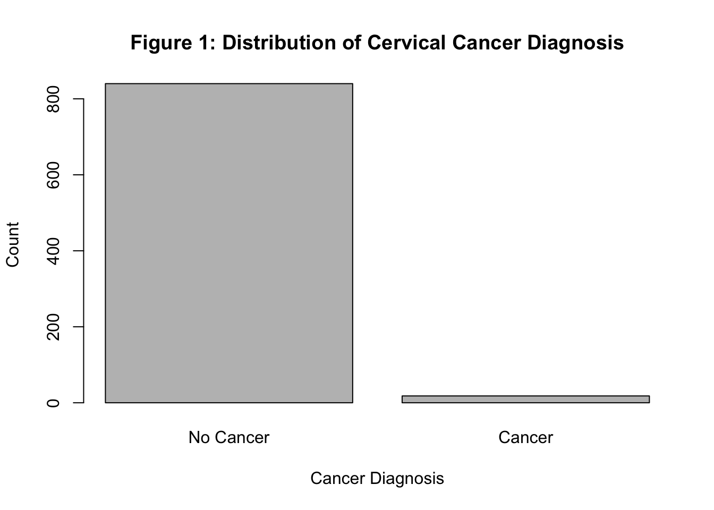
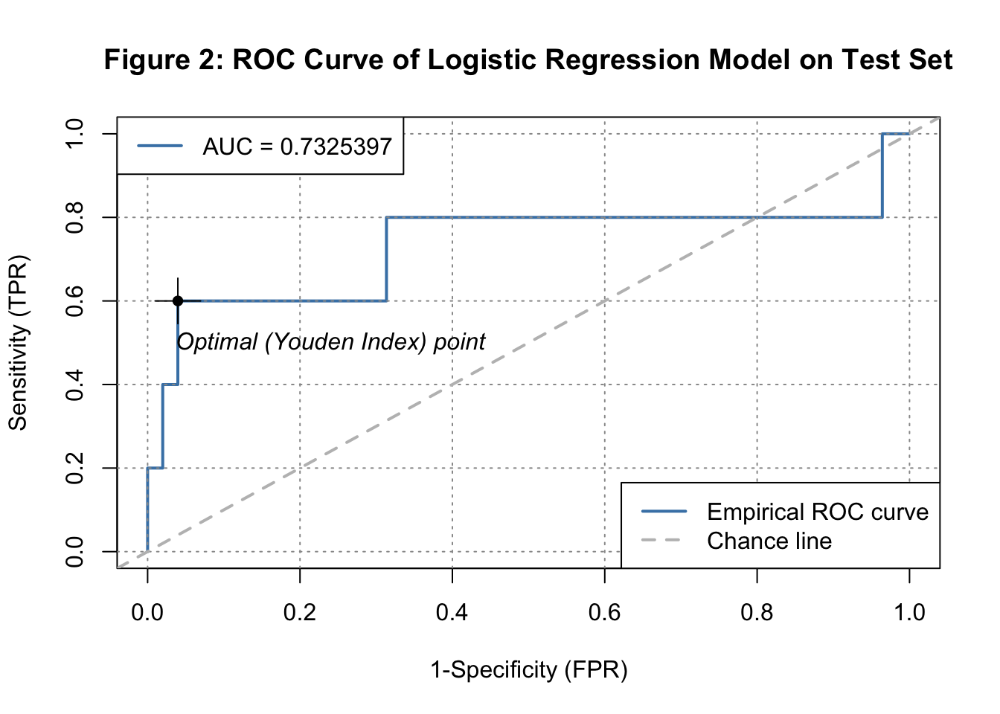
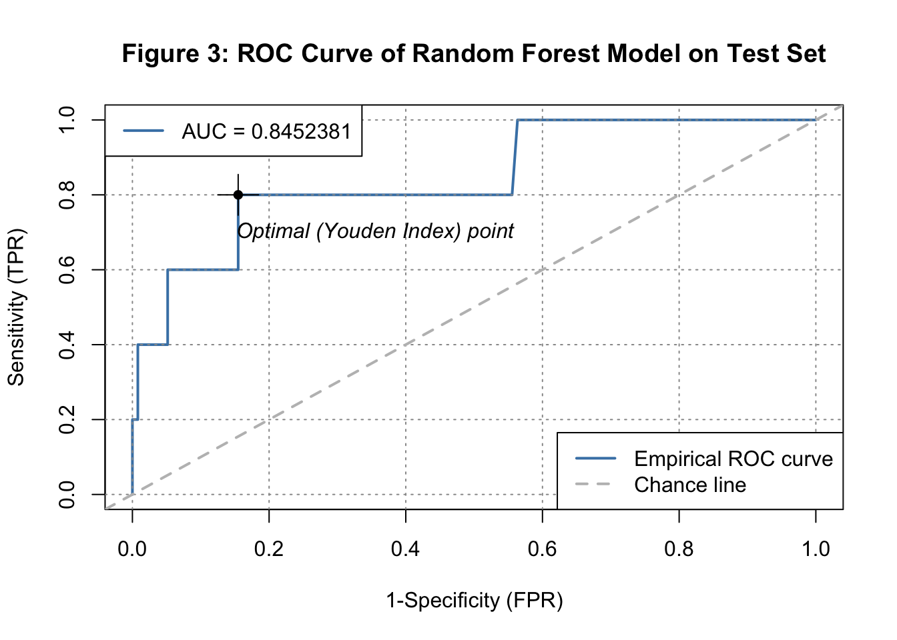
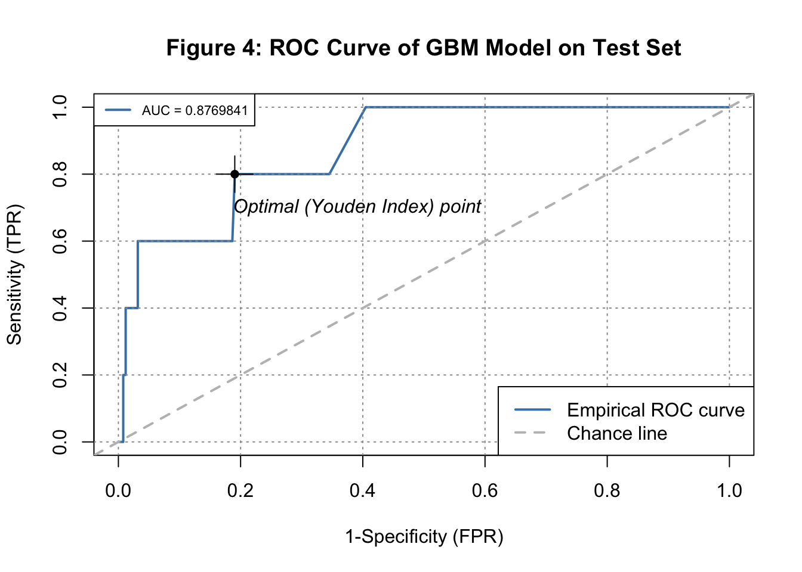
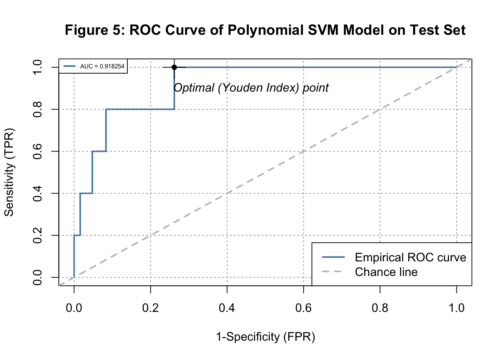
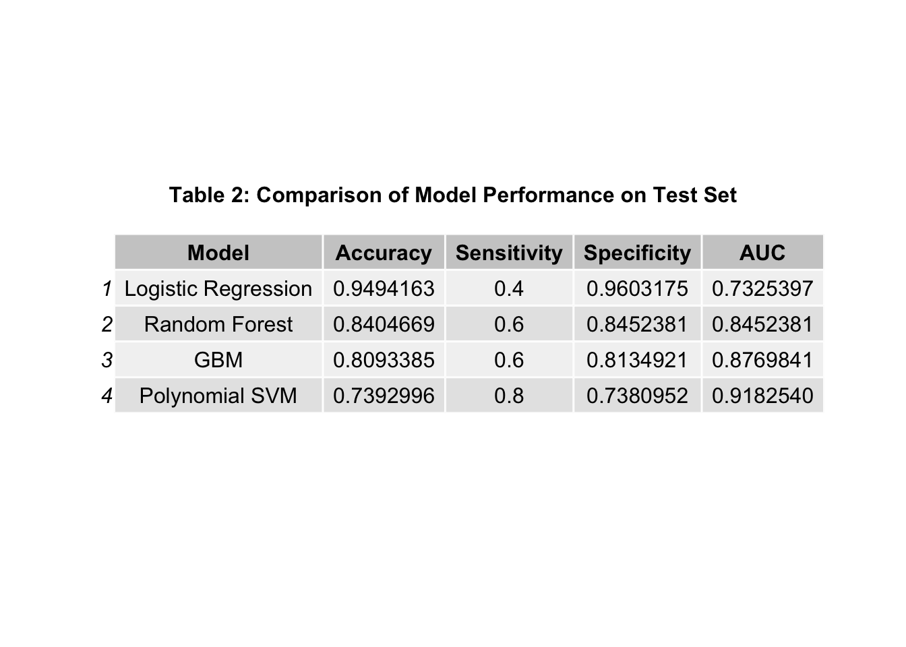

Toward Accessible Cervical Cancer Screening: A Comparative Evaluation of Machine Learning Classification Models
by Audrey Su
Introduction:
Cervical cancer is a cancer that affects women only and arises from the abnormal growth of cells in the cervix [1]. When detected early, cervical cancer is highly preventable and can be treated with a high rate of success [2]. Despite being largely preventable, cervical cancer continues to pose a significant global health challenge, with over 600,000 new diagnoses and over 340,000 fatalities recorded in 2020. Inequities in access to cervical cancer screening disproportionately affect underserved populations, frequently resulting in delayed diagnoses and poorer clinical outcomes [3]. Conventional screening methods such as Pap smears and Human Papillomavirus (HPV) testing, while clinically effective, require specialized infrastructure and expert interpretation that are frequently unavailable in low resource settings, disproportionately limiting access among the populations most burdened by cervical cancer [4]. An active and growing area of research is to apply machine learning models on routinely collected cervical cancer patient data to automatically classify patients as high risk or low risk for cervical cancer. This approach could provide accessible cervical cancer risk assessment in low resource settings where infrastructure for traditional screening is insufficient [5] and trained specialists aren’t available [6]. Machine learning could enable earlier and more precise cervical cancer classification, potentially improving patient survival rates. This raises my research question:
How well can machine learning models classify patients as having cervical cancer or not having cervical cancer using patient data?
For this study, I conduct my analysis on a dataset in UC Irvine Machine Learning Repository that was uploaded in 2017 that covers information on cervical cancer and its risk factors [7]. The data is comprised of patient records that were sourced from the Hospital Universitario de Caracas in Caracas, Venezuela. The dataset encompasses demographic characteristics, behavioral habits, and historical medical records drawn from a cohort of 858 patients. The dataset contains 36 features, such as “Age” (age of patient at hospitalization), “STDs.HPV” (binary indicator of whether a patient has a history of HPV diagnosis or not), and “Dx.Cancer” (binary indicator of whether a patient was diagnosed with cervical cancer or not) that describe the health information of each patient. For this analysis, the goal was to predict cervical cancer diagnosis (corresponding to the column “Dx.Cancer”) based on predictor variables. I also aimed to match my predictions as closely as possible to the actual outcome values in the outcome column of “Dx.Cancer”. The dataset contains missing values because some patients declined to respond to certain survey items due to privacy concerns.
Methods:
3622 missing values were found in the data. The missing values were imputed in order to preserve dataset size, preserve the class structure of the data, and avoid selection bias. Imputation strategies were tailored to each variable type to preserve the statistical properties of each feature. After applying data cleaning and exploratory data analysis to the dataset, I applied feature engineering to the data in order to derive three new features from the existing variables in the data to extract more informative insights that machine learning models can better learn from. I created three additional features of “Time.since.First.intercourse” (the amount of years since the patient’s first sexual intercourse), “Num.of.pregnancies..age” (the ratio between the number of pregnancies a patient has had and the patient’s age), and “Early.intercourse” (a binary indicator of whether a patient had their first sexual intercourse at an early age or not). I removed the features of “STDs.cervical.condylomatosis” and “STDs.AIDS” from the dataset because these features have zero variance and therefore provide no discriminative information for a machine learning model to learn from. The features “Dx.CIN”, “Dx.HPV”, “Dx”, “Hinselmann”, “Schiller”, “Citology”, and “Biopsy” were removed prior to model training to prevent data leakage, as these variables directly encode or are closely related to cervical cancer diagnosis and would artificially inflate model performance if included as predictors. After applying all the necessary transformations to the data, the data now consisted of 858 rows and 30 features. I decided to keep all of the remaining 30 features for the future model training.
I applied four different categories of machine learning models to the data: Logistic Regression, Random Forest Classifier, Gradient Boosted Machine (GBM), and Polynomial Support Vector Machine (SVM). Logistic Regression is a supervised machine learning algorithm used for binary classification that maps each observation to a probabilistic prediction of which class the observation belongs to, then assigns each observation to a corresponding class based on whether the observation’s calculated probability exceeds a predetermined threshold or not. Logistic Regression was used because it can serve as a strong baseline model that is specifically designed for binary classification. Random Forest is a supervised ensemble learning algorithm that aggregates the predictions of multiple decision trees trained on bootstrapped samples of the data, determining final class assignments when used for binary classification through majority voting across all trees. I selected Random Forest Classifier because it can be more robust to overfitting and class imbalance, and because of its ability to work with complex, non-linear interactions between features. GBM is a supervised ensemble learning algorithm that sequentially trains decision trees, where each tree is fitted to the negative gradient of the loss function of its predecessor, progressively correcting prediction errors across boosting iterations. I chose GBM because it may be more robust to overfitting and class imbalance, and because its sequential boosting algorithm that iteratively tries to correct the errors made by previous trees can potentially reduce bias and variance in the data. Polynomial SVM is a supervised machine learning algorithm that finds the optimal hyperplane or decision boundary that separates the observations in the data into two different classes by maximizing the distance between the hyperplane and the surrounding observations; specifically, Polynomial SVM is a type of SVM that uses a polynomial kernel function to map input features into a higher dimensional polynomial feature space. I employed Polynomial SVM because of its robustness to overfitting, its capacity to capture non-linear relationships between predictors via the polynomial kernel, and its suitability for high dimensional classification problems.
I administered a stratified 70/30 training/test split on the data. I applied five-fold cross-validation on the training data to reduce the risk of overfitting. Hyperparameter tuning was conducted on the training data for each model using grid search, selecting the configuration yielding the highest cross validated AUC for evaluation on the test set. Model performance was assessed using accuracy, sensitivity, specificity, and AUC, with the model achieving the highest test set AUC identified as the best performing model for cervical cancer classification.
A key challenge encountered during preprocessing was determining an appropriate imputation strategy for missing values. To preserve the statistical properties of each feature, I decided to apply three distinct imputation strategies based on variable type. For integer columns, I imputed NA values with the ceiling of the average of the non NA values in the column. For continuous numeric columns, I imputed NA values with the average of non NA values in the column. For binary columns, I imputed NA values with the mode of the non NA values in the column. Another issue encountered was trying to work with the dataset’s class imbalance. Out of the 858 patients in the dataset, only 18 (around 2.1%) were diagnosed with cervical cancer. Because the dataset contains far more patients without cervical cancer than patients that do have cervical cancer, models will likely be biased toward predicting “No Cancer” and are more likely to generalize poorly to the test set. To mitigate the effects of class imbalance, a stratified 70/30 train/test split was administered to preserve the proportion of cancer positive and cancer negative cases across both the training and test sets. Additionally, rather than applying the default classification threshold of 0.5—which assumes balanced class distributions and tends to bias predictions toward the majority class in imbalanced datasets—the Youden Index was employed to select the optimal classification threshold for each model that best balances sensitivity and specificity. Another obstacle was that I did not have much background information on cervical cancer, which made conducting analysis and interpreting my results challenging. I did lots of research online on cervical cancer in order to make up my knowledge gap.
Results:
set.seed(42)# Read in cervical cancer data csv
cervical <- read.csv('/Users/audreysu/Datasci 216/Final Project/risk_factors_cervical_cancer.csv')
print(head(cervical)) Age Number.of.sexual.partners First.sexual.intercourse Num.of.pregnancies
1 18 4.0 15.0 1.0
2 15 1.0 14.0 1.0
3 34 1.0 ? 1.0
4 52 5.0 16.0 4.0
5 46 3.0 21.0 4.0
6 42 3.0 23.0 2.0
Smokes Smokes..years. Smokes..packs.year. Hormonal.Contraceptives
1 0.0 0.0 0.0 0.0
2 0.0 0.0 0.0 0.0
3 0.0 0.0 0.0 0.0
4 1.0 37.0 37.0 1.0
5 0.0 0.0 0.0 1.0
6 0.0 0.0 0.0 0.0
Hormonal.Contraceptives..years. IUD IUD..years. STDs STDs..number.
1 0.0 0.0 0.0 0.0 0.0
2 0.0 0.0 0.0 0.0 0.0
3 0.0 0.0 0.0 0.0 0.0
4 3.0 0.0 0.0 0.0 0.0
5 15.0 0.0 0.0 0.0 0.0
6 0.0 0.0 0.0 0.0 0.0
STDs.condylomatosis STDs.cervical.condylomatosis STDs.vaginal.condylomatosis
1 0.0 0.0 0.0
2 0.0 0.0 0.0
3 0.0 0.0 0.0
4 0.0 0.0 0.0
5 0.0 0.0 0.0
6 0.0 0.0 0.0
STDs.vulvo.perineal.condylomatosis STDs.syphilis
1 0.0 0.0
2 0.0 0.0
3 0.0 0.0
4 0.0 0.0
5 0.0 0.0
6 0.0 0.0
STDs.pelvic.inflammatory.disease STDs.genital.herpes
1 0.0 0.0
2 0.0 0.0
3 0.0 0.0
4 0.0 0.0
5 0.0 0.0
6 0.0 0.0
STDs.molluscum.contagiosum STDs.AIDS STDs.HIV STDs.Hepatitis.B STDs.HPV
1 0.0 0.0 0.0 0.0 0.0
2 0.0 0.0 0.0 0.0 0.0
3 0.0 0.0 0.0 0.0 0.0
4 0.0 0.0 0.0 0.0 0.0
5 0.0 0.0 0.0 0.0 0.0
6 0.0 0.0 0.0 0.0 0.0
STDs..Number.of.diagnosis STDs..Time.since.first.diagnosis
1 0 ?
2 0 ?
3 0 ?
4 0 ?
5 0 ?
6 0 ?
STDs..Time.since.last.diagnosis Dx.Cancer Dx.CIN Dx.HPV Dx Hinselmann
1 ? 0 0 0 0 0
2 ? 0 0 0 0 0
3 ? 0 0 0 0 0
4 ? 1 0 1 0 0
5 ? 0 0 0 0 0
6 ? 0 0 0 0 0
Schiller Citology Biopsy
1 0 0 0
2 0 0 0
3 0 0 0
4 0 0 0
5 0 0 0
6 0 0 0print("initial shape of dataframe:")[1] "initial shape of dataframe:"print(dim(cervical))[1] 858 36print("column names of dataframe:")[1] "column names of dataframe:"print(colnames(cervical)) [1] "Age" "Number.of.sexual.partners"
[3] "First.sexual.intercourse" "Num.of.pregnancies"
[5] "Smokes" "Smokes..years."
[7] "Smokes..packs.year." "Hormonal.Contraceptives"
[9] "Hormonal.Contraceptives..years." "IUD"
[11] "IUD..years." "STDs"
[13] "STDs..number." "STDs.condylomatosis"
[15] "STDs.cervical.condylomatosis" "STDs.vaginal.condylomatosis"
[17] "STDs.vulvo.perineal.condylomatosis" "STDs.syphilis"
[19] "STDs.pelvic.inflammatory.disease" "STDs.genital.herpes"
[21] "STDs.molluscum.contagiosum" "STDs.AIDS"
[23] "STDs.HIV" "STDs.Hepatitis.B"
[25] "STDs.HPV" "STDs..Number.of.diagnosis"
[27] "STDs..Time.since.first.diagnosis" "STDs..Time.since.last.diagnosis"
[29] "Dx.Cancer" "Dx.CIN"
[31] "Dx.HPV" "Dx"
[33] "Hinselmann" "Schiller"
[35] "Citology" "Biopsy" print("structure of dataframe:")[1] "structure of dataframe:"print(str(cervical))'data.frame': 858 obs. of 36 variables:
$ Age : int 18 15 34 52 46 42 51 26 45 44 ...
$ Number.of.sexual.partners : chr "4.0" "1.0" "1.0" "5.0" ...
$ First.sexual.intercourse : chr "15.0" "14.0" "?" "16.0" ...
$ Num.of.pregnancies : chr "1.0" "1.0" "1.0" "4.0" ...
$ Smokes : chr "0.0" "0.0" "0.0" "1.0" ...
$ Smokes..years. : chr "0.0" "0.0" "0.0" "37.0" ...
$ Smokes..packs.year. : chr "0.0" "0.0" "0.0" "37.0" ...
$ Hormonal.Contraceptives : chr "0.0" "0.0" "0.0" "1.0" ...
$ Hormonal.Contraceptives..years. : chr "0.0" "0.0" "0.0" "3.0" ...
$ IUD : chr "0.0" "0.0" "0.0" "0.0" ...
$ IUD..years. : chr "0.0" "0.0" "0.0" "0.0" ...
$ STDs : chr "0.0" "0.0" "0.0" "0.0" ...
$ STDs..number. : chr "0.0" "0.0" "0.0" "0.0" ...
$ STDs.condylomatosis : chr "0.0" "0.0" "0.0" "0.0" ...
$ STDs.cervical.condylomatosis : chr "0.0" "0.0" "0.0" "0.0" ...
$ STDs.vaginal.condylomatosis : chr "0.0" "0.0" "0.0" "0.0" ...
$ STDs.vulvo.perineal.condylomatosis: chr "0.0" "0.0" "0.0" "0.0" ...
$ STDs.syphilis : chr "0.0" "0.0" "0.0" "0.0" ...
$ STDs.pelvic.inflammatory.disease : chr "0.0" "0.0" "0.0" "0.0" ...
$ STDs.genital.herpes : chr "0.0" "0.0" "0.0" "0.0" ...
$ STDs.molluscum.contagiosum : chr "0.0" "0.0" "0.0" "0.0" ...
$ STDs.AIDS : chr "0.0" "0.0" "0.0" "0.0" ...
$ STDs.HIV : chr "0.0" "0.0" "0.0" "0.0" ...
$ STDs.Hepatitis.B : chr "0.0" "0.0" "0.0" "0.0" ...
$ STDs.HPV : chr "0.0" "0.0" "0.0" "0.0" ...
$ STDs..Number.of.diagnosis : int 0 0 0 0 0 0 0 0 0 0 ...
$ STDs..Time.since.first.diagnosis : chr "?" "?" "?" "?" ...
$ STDs..Time.since.last.diagnosis : chr "?" "?" "?" "?" ...
$ Dx.Cancer : int 0 0 0 1 0 0 0 0 1 0 ...
$ Dx.CIN : int 0 0 0 0 0 0 0 0 0 0 ...
$ Dx.HPV : int 0 0 0 1 0 0 0 0 1 0 ...
$ Dx : int 0 0 0 0 0 0 0 0 1 0 ...
$ Hinselmann : int 0 0 0 0 0 0 1 0 0 0 ...
$ Schiller : int 0 0 0 0 0 0 1 0 0 0 ...
$ Citology : int 0 0 0 0 0 0 0 0 0 0 ...
$ Biopsy : int 0 0 0 0 0 0 1 0 0 0 ...
NULL# inspect columns
for (i in colnames(cervical)) {
print(paste("table of", i, "column:"))
print(table(cervical[[i]]))
}[1] "table of Age column:"
13 14 15 16 17 18 19 20 21 22 23 24 25 26 27 28 29 30 31 32 33 34 35 36 37 38
1 5 21 23 35 50 44 45 46 30 54 39 39 38 33 37 33 35 27 18 28 24 29 24 17 9
39 40 41 42 43 44 45 46 47 48 49 50 51 52 59 70 79 84
9 12 13 6 5 6 6 3 1 2 2 1 1 2 1 2 1 1
[1] "table of Number.of.sexual.partners column:"
? 1.0 10.0 15.0 2.0 28.0 3.0 4.0 5.0 6.0 7.0 8.0 9.0
26 206 1 1 272 1 208 78 44 9 7 4 1
[1] "table of First.sexual.intercourse column:"
? 10.0 11.0 12.0 13.0 14.0 15.0 16.0 17.0 18.0 19.0 20.0 21.0 22.0 23.0 24.0
7 2 2 6 25 79 163 121 151 137 60 37 20 9 9 6
25.0 26.0 27.0 28.0 29.0 32.0
2 7 6 3 5 1
[1] "table of Num.of.pregnancies column:"
? 0.0 1.0 10.0 11.0 2.0 3.0 4.0 5.0 6.0 7.0 8.0
56 16 270 1 1 240 139 74 35 18 6 2
[1] "table of Smokes column:"
? 0.0 1.0
13 722 123
[1] "table of Smokes..years. column:"
? 0.0 0.16 0.5 1.0 1.266972909
13 722 1 3 8 15
10.0 11.0 12.0 13.0 14.0 15.0
5 5 3 3 4 4
16.0 18.0 19.0 2.0 20.0 21.0
6 1 3 7 1 1
22.0 24.0 28.0 3.0 32.0 34.0
2 1 1 7 1 1
37.0 4.0 5.0 6.0 7.0 8.0
1 5 9 4 6 6
9.0
9
[1] "table of Smokes..packs.year. column:"
? 0.0 0.001 0.003 0.025 0.04
13 722 1 1 1 2
0.05 0.1 0.15 0.16 0.2 0.25
4 3 1 2 4 1
0.3 0.32 0.37 0.4 0.45 0.5
1 1 1 1 1 1
0.5132021277 0.7 0.75 0.8 0.9 1.0
18 1 4 2 1 6
1.2 1.25 1.3 1.35 1.4 1.6
4 1 1 2 2 2
1.65 12.0 15.0 19.0 2.0 2.1
1 3 1 1 4 1
2.2 2.25 2.4 2.5 2.6 2.7
1 1 2 1 1 1
2.75 2.8 21.0 22.0 3.0 3.3
1 2 1 1 5 1
3.4 3.5 37.0 4.0 4.5 4.8
1 2 1 1 2 1
5.0 5.5 5.7 6.0 7.0 7.5
3 1 1 3 2 1
7.6 8.0 9.0
1 2 2
[1] "table of Hormonal.Contraceptives column:"
? 0.0 1.0
108 269 481
[1] "table of Hormonal.Contraceptives..years. column:"
? 0.0 0.08 0.16 0.17 0.25
108 269 25 16 1 41
0.33 0.41 0.42 0.5 0.58 0.66
9 1 8 25 6 6
0.67 0.75 1.0 1.5 10.0 11.0
2 7 77 3 11 2
12.0 13.0 14.0 15.0 16.0 17.0
4 2 2 6 2 1
19.0 2.0 2.282200521 2.5 20.0 22.0
2 40 2 1 4 1
3.0 3.5 30.0 4.0 4.5 5.0
39 1 1 22 1 34
6.0 6.5 7.0 8.0 9.0
24 1 21 18 12
[1] "table of IUD column:"
? 0.0 1.0
117 658 83
[1] "table of IUD..years. column:"
? 0.0 0.08 0.16 0.17 0.25 0.33 0.41 0.5 0.58 0.91 1.0 1.5 10.0 11.0 12.0
117 658 2 1 1 1 1 1 2 1 1 8 1 1 3 1
15.0 17.0 19.0 2.0 3.0 4.0 5.0 6.0 7.0 8.0 9.0
1 1 1 10 11 5 9 5 7 7 1
[1] "table of STDs column:"
? 0.0 1.0
105 674 79
[1] "table of STDs..number. column:"
? 0.0 1.0 2.0 3.0 4.0
105 674 34 37 7 1
[1] "table of STDs.condylomatosis column:"
? 0.0 1.0
105 709 44
[1] "table of STDs.cervical.condylomatosis column:"
? 0.0
105 753
[1] "table of STDs.vaginal.condylomatosis column:"
? 0.0 1.0
105 749 4
[1] "table of STDs.vulvo.perineal.condylomatosis column:"
? 0.0 1.0
105 710 43
[1] "table of STDs.syphilis column:"
? 0.0 1.0
105 735 18
[1] "table of STDs.pelvic.inflammatory.disease column:"
? 0.0 1.0
105 752 1
[1] "table of STDs.genital.herpes column:"
? 0.0 1.0
105 752 1
[1] "table of STDs.molluscum.contagiosum column:"
? 0.0 1.0
105 752 1
[1] "table of STDs.AIDS column:"
? 0.0
105 753
[1] "table of STDs.HIV column:"
? 0.0 1.0
105 735 18
[1] "table of STDs.Hepatitis.B column:"
? 0.0 1.0
105 752 1
[1] "table of STDs.HPV column:"
? 0.0 1.0
105 751 2
[1] "table of STDs..Number.of.diagnosis column:"
0 1 2 3
787 68 2 1
[1] "table of STDs..Time.since.first.diagnosis column:"
? 1.0 10.0 11.0 12.0 15.0 16.0 18.0 19.0 2.0 21.0 22.0 3.0 4.0 5.0 6.0
787 15 1 2 1 1 4 1 2 9 2 1 10 6 4 3
7.0 8.0 9.0
5 3 1
[1] "table of STDs..Time.since.last.diagnosis column:"
? 1.0 10.0 11.0 12.0 15.0 16.0 18.0 19.0 2.0 21.0 22.0 3.0 4.0 5.0 6.0
787 17 1 2 1 1 4 1 1 10 2 1 9 6 3 3
7.0 8.0 9.0
5 3 1
[1] "table of Dx.Cancer column:"
0 1
840 18
[1] "table of Dx.CIN column:"
0 1
849 9
[1] "table of Dx.HPV column:"
0 1
840 18
[1] "table of Dx column:"
0 1
834 24
[1] "table of Hinselmann column:"
0 1
823 35
[1] "table of Schiller column:"
0 1
784 74
[1] "table of Citology column:"
0 1
814 44
[1] "table of Biopsy column:"
0 1
803 55 # change "?" values to being represented as NA
cervical[cervical == "?"] <- NA
print("number of missing values per column in dataframe:")[1] "number of missing values per column in dataframe:"print(colSums(is.na(cervical))) Age Number.of.sexual.partners
0 26
First.sexual.intercourse Num.of.pregnancies
7 56
Smokes Smokes..years.
13 13
Smokes..packs.year. Hormonal.Contraceptives
13 108
Hormonal.Contraceptives..years. IUD
108 117
IUD..years. STDs
117 105
STDs..number. STDs.condylomatosis
105 105
STDs.cervical.condylomatosis STDs.vaginal.condylomatosis
105 105
STDs.vulvo.perineal.condylomatosis STDs.syphilis
105 105
STDs.pelvic.inflammatory.disease STDs.genital.herpes
105 105
STDs.molluscum.contagiosum STDs.AIDS
105 105
STDs.HIV STDs.Hepatitis.B
105 105
STDs.HPV STDs..Number.of.diagnosis
105 0
STDs..Time.since.first.diagnosis STDs..Time.since.last.diagnosis
787 787
Dx.Cancer Dx.CIN
0 0
Dx.HPV Dx
0 0
Hinselmann Schiller
0 0
Citology Biopsy
0 0 print("total number of missing values in dataframe:")[1] "total number of missing values in dataframe:"print(sum(colSums(is.na(cervical))))[1] 3622# convert data types
for (i in c("Number.of.sexual.partners", "First.sexual.intercourse", "Num.of.pregnancies", "Smokes", "Hormonal.Contraceptives", "IUD", "STDs", "STDs..number.", "STDs.condylomatosis", "STDs.cervical.condylomatosis", "STDs.vaginal.condylomatosis", "STDs.vulvo.perineal.condylomatosis", "STDs.syphilis", "STDs.pelvic.inflammatory.disease", "STDs.genital.herpes", "STDs.molluscum.contagiosum", "STDs.AIDS", "STDs.HIV", "STDs.Hepatitis.B", "STDs.HPV", "STDs..Time.since.first.diagnosis", "STDs..Time.since.last.diagnosis")) {
cervical[[i]] <- as.integer(cervical[[i]])
}
for (i in c("Smokes..years.", "Smokes..packs.year.", "Hormonal.Contraceptives..years.", "IUD..years.")) {
cervical[[i]] <- as.numeric(cervical[[i]])
}
print("structure of dataframe after changing datatypes:")[1] "structure of dataframe after changing datatypes:"print(str(cervical))'data.frame': 858 obs. of 36 variables:
$ Age : int 18 15 34 52 46 42 51 26 45 44 ...
$ Number.of.sexual.partners : int 4 1 1 5 3 3 3 1 1 3 ...
$ First.sexual.intercourse : int 15 14 NA 16 21 23 17 26 20 15 ...
$ Num.of.pregnancies : int 1 1 1 4 4 2 6 3 5 NA ...
$ Smokes : int 0 0 0 1 0 0 1 0 0 1 ...
$ Smokes..years. : num 0 0 0 37 0 ...
$ Smokes..packs.year. : num 0 0 0 37 0 0 3.4 0 0 2.8 ...
$ Hormonal.Contraceptives : int 0 0 0 1 1 0 0 1 0 0 ...
$ Hormonal.Contraceptives..years. : num 0 0 0 3 15 0 0 2 0 0 ...
$ IUD : int 0 0 0 0 0 0 1 1 0 NA ...
$ IUD..years. : num 0 0 0 0 0 0 7 7 0 NA ...
$ STDs : int 0 0 0 0 0 0 0 0 0 0 ...
$ STDs..number. : int 0 0 0 0 0 0 0 0 0 0 ...
$ STDs.condylomatosis : int 0 0 0 0 0 0 0 0 0 0 ...
$ STDs.cervical.condylomatosis : int 0 0 0 0 0 0 0 0 0 0 ...
$ STDs.vaginal.condylomatosis : int 0 0 0 0 0 0 0 0 0 0 ...
$ STDs.vulvo.perineal.condylomatosis: int 0 0 0 0 0 0 0 0 0 0 ...
$ STDs.syphilis : int 0 0 0 0 0 0 0 0 0 0 ...
$ STDs.pelvic.inflammatory.disease : int 0 0 0 0 0 0 0 0 0 0 ...
$ STDs.genital.herpes : int 0 0 0 0 0 0 0 0 0 0 ...
$ STDs.molluscum.contagiosum : int 0 0 0 0 0 0 0 0 0 0 ...
$ STDs.AIDS : int 0 0 0 0 0 0 0 0 0 0 ...
$ STDs.HIV : int 0 0 0 0 0 0 0 0 0 0 ...
$ STDs.Hepatitis.B : int 0 0 0 0 0 0 0 0 0 0 ...
$ STDs.HPV : int 0 0 0 0 0 0 0 0 0 0 ...
$ STDs..Number.of.diagnosis : int 0 0 0 0 0 0 0 0 0 0 ...
$ STDs..Time.since.first.diagnosis : int NA NA NA NA NA NA NA NA NA NA ...
$ STDs..Time.since.last.diagnosis : int NA NA NA NA NA NA NA NA NA NA ...
$ Dx.Cancer : int 0 0 0 1 0 0 0 0 1 0 ...
$ Dx.CIN : int 0 0 0 0 0 0 0 0 0 0 ...
$ Dx.HPV : int 0 0 0 1 0 0 0 0 1 0 ...
$ Dx : int 0 0 0 0 0 0 0 0 1 0 ...
$ Hinselmann : int 0 0 0 0 0 0 1 0 0 0 ...
$ Schiller : int 0 0 0 0 0 0 1 0 0 0 ...
$ Citology : int 0 0 0 0 0 0 0 0 0 0 ...
$ Biopsy : int 0 0 0 0 0 0 1 0 0 0 ...
NULL# address missing values
# repace NA values in integer columns with average of the non NA values in the column rounded up
for (i in c("Number.of.sexual.partners", "First.sexual.intercourse", "Num.of.pregnancies", "STDs..number.", "STDs..Time.since.first.diagnosis", "STDs..Time.since.last.diagnosis")) {
x <- cervical[[i]]
x[is.na(x)] <- ceiling(mean(x, na.rm = TRUE))
cervical[[i]] <- x
}
# repace NA values in continuous numeric columns with average of the non NA values in the column
for (i in c("Smokes..years.", "Smokes..packs.year.", "Hormonal.Contraceptives..years.", "IUD..years.")) {
x <- cervical[[i]]
x[is.na(x)] <- mean(x, na.rm = TRUE)
cervical[[i]] <- x
}
# repace NA values in binary yes/no columns with mode of the non NA values in the column
get_mode <- function(x) {
x <- x[!is.na(x)]
ux <- unique(x)
ux[which.max(tabulate(match(x, ux)))]
}
for (i in c("Smokes", "Hormonal.Contraceptives", "IUD", "STDs", "STDs.condylomatosis", "STDs.cervical.condylomatosis", "STDs.vaginal.condylomatosis", "STDs.vulvo.perineal.condylomatosis", "STDs.syphilis", "STDs.pelvic.inflammatory.disease", "STDs.genital.herpes", "STDs.molluscum.contagiosum", "STDs.AIDS", "STDs.HIV", "STDs.Hepatitis.B", "STDs.HPV")) {
x <- cervical[[i]]
x[is.na(x)] <- get_mode(x)
cervical[[i]] <- x
}
print("missing count after imputing missing values:")[1] "missing count after imputing missing values:"print(colSums(is.na(cervical))) Age Number.of.sexual.partners
0 0
First.sexual.intercourse Num.of.pregnancies
0 0
Smokes Smokes..years.
0 0
Smokes..packs.year. Hormonal.Contraceptives
0 0
Hormonal.Contraceptives..years. IUD
0 0
IUD..years. STDs
0 0
STDs..number. STDs.condylomatosis
0 0
STDs.cervical.condylomatosis STDs.vaginal.condylomatosis
0 0
STDs.vulvo.perineal.condylomatosis STDs.syphilis
0 0
STDs.pelvic.inflammatory.disease STDs.genital.herpes
0 0
STDs.molluscum.contagiosum STDs.AIDS
0 0
STDs.HIV STDs.Hepatitis.B
0 0
STDs.HPV STDs..Number.of.diagnosis
0 0
STDs..Time.since.first.diagnosis STDs..Time.since.last.diagnosis
0 0
Dx.Cancer Dx.CIN
0 0
Dx.HPV Dx
0 0
Hinselmann Schiller
0 0
Citology Biopsy
0 0 print("summary of dataframe after transforming column types and addressing missing values:")[1] "summary of dataframe after transforming column types and addressing missing values:"print(summary(cervical)) Age Number.of.sexual.partners First.sexual.intercourse
Min. :13.00 Min. : 1.000 Min. :10
1st Qu.:20.00 1st Qu.: 2.000 1st Qu.:15
Median :25.00 Median : 2.000 Median :17
Mean :26.82 Mean : 2.542 Mean :17
3rd Qu.:32.00 3rd Qu.: 3.000 3rd Qu.:18
Max. :84.00 Max. :28.000 Max. :32
Num.of.pregnancies Smokes Smokes..years. Smokes..packs.year.
Min. : 0.000 Min. :0.0000 Min. : 0.00 Min. : 0.0000
1st Qu.: 1.000 1st Qu.:0.0000 1st Qu.: 0.00 1st Qu.: 0.0000
Median : 2.000 Median :0.0000 Median : 0.00 Median : 0.0000
Mean : 2.323 Mean :0.1434 Mean : 1.22 Mean : 0.4531
3rd Qu.: 3.000 3rd Qu.:0.0000 3rd Qu.: 0.00 3rd Qu.: 0.0000
Max. :11.000 Max. :1.0000 Max. :37.00 Max. :37.0000
Hormonal.Contraceptives Hormonal.Contraceptives..years. IUD
Min. :0.0000 Min. : 0.000 Min. :0.00000
1st Qu.:0.0000 1st Qu.: 0.000 1st Qu.:0.00000
Median :1.0000 Median : 1.000 Median :0.00000
Mean :0.6865 Mean : 2.256 Mean :0.09674
3rd Qu.:1.0000 3rd Qu.: 2.256 3rd Qu.:0.00000
Max. :1.0000 Max. :30.000 Max. :1.00000
IUD..years. STDs STDs..number. STDs.condylomatosis
Min. : 0.0000 Min. :0.00000 Min. :0.0000 Min. :0.00000
1st Qu.: 0.0000 1st Qu.:0.00000 1st Qu.:0.0000 1st Qu.:0.00000
Median : 0.0000 Median :0.00000 Median :0.0000 Median :0.00000
Mean : 0.5148 Mean :0.09207 Mean :0.2774 Mean :0.05128
3rd Qu.: 0.0000 3rd Qu.:0.00000 3rd Qu.:0.0000 3rd Qu.:0.00000
Max. :19.0000 Max. :1.00000 Max. :4.0000 Max. :1.00000
STDs.cervical.condylomatosis STDs.vaginal.condylomatosis
Min. :0 Min. :0.000000
1st Qu.:0 1st Qu.:0.000000
Median :0 Median :0.000000
Mean :0 Mean :0.004662
3rd Qu.:0 3rd Qu.:0.000000
Max. :0 Max. :1.000000
STDs.vulvo.perineal.condylomatosis STDs.syphilis
Min. :0.00000 Min. :0.00000
1st Qu.:0.00000 1st Qu.:0.00000
Median :0.00000 Median :0.00000
Mean :0.05012 Mean :0.02098
3rd Qu.:0.00000 3rd Qu.:0.00000
Max. :1.00000 Max. :1.00000
STDs.pelvic.inflammatory.disease STDs.genital.herpes
Min. :0.000000 Min. :0.000000
1st Qu.:0.000000 1st Qu.:0.000000
Median :0.000000 Median :0.000000
Mean :0.001166 Mean :0.001166
3rd Qu.:0.000000 3rd Qu.:0.000000
Max. :1.000000 Max. :1.000000
STDs.molluscum.contagiosum STDs.AIDS STDs.HIV STDs.Hepatitis.B
Min. :0.000000 Min. :0 Min. :0.00000 Min. :0.000000
1st Qu.:0.000000 1st Qu.:0 1st Qu.:0.00000 1st Qu.:0.000000
Median :0.000000 Median :0 Median :0.00000 Median :0.000000
Mean :0.001166 Mean :0 Mean :0.02098 Mean :0.001166
3rd Qu.:0.000000 3rd Qu.:0 3rd Qu.:0.00000 3rd Qu.:0.000000
Max. :1.000000 Max. :0 Max. :1.00000 Max. :1.000000
STDs.HPV STDs..Number.of.diagnosis STDs..Time.since.first.diagnosis
Min. :0.000000 Min. :0.00000 Min. : 1.000
1st Qu.:0.000000 1st Qu.:0.00000 1st Qu.: 7.000
Median :0.000000 Median :0.00000 Median : 7.000
Mean :0.002331 Mean :0.08741 Mean : 6.929
3rd Qu.:0.000000 3rd Qu.:0.00000 3rd Qu.: 7.000
Max. :1.000000 Max. :3.00000 Max. :22.000
STDs..Time.since.last.diagnosis Dx.Cancer Dx.CIN
Min. : 1.000 Min. :0.00000 Min. :0.00000
1st Qu.: 6.000 1st Qu.:0.00000 1st Qu.:0.00000
Median : 6.000 Median :0.00000 Median :0.00000
Mean : 5.985 Mean :0.02098 Mean :0.01049
3rd Qu.: 6.000 3rd Qu.:0.00000 3rd Qu.:0.00000
Max. :22.000 Max. :1.00000 Max. :1.00000
Dx.HPV Dx Hinselmann Schiller
Min. :0.00000 Min. :0.00000 Min. :0.00000 Min. :0.00000
1st Qu.:0.00000 1st Qu.:0.00000 1st Qu.:0.00000 1st Qu.:0.00000
Median :0.00000 Median :0.00000 Median :0.00000 Median :0.00000
Mean :0.02098 Mean :0.02797 Mean :0.04079 Mean :0.08625
3rd Qu.:0.00000 3rd Qu.:0.00000 3rd Qu.:0.00000 3rd Qu.:0.00000
Max. :1.00000 Max. :1.00000 Max. :1.00000 Max. :1.00000
Citology Biopsy
Min. :0.00000 Min. :0.0000
1st Qu.:0.00000 1st Qu.:0.0000
Median :0.00000 Median :0.0000
Mean :0.05128 Mean :0.0641
3rd Qu.:0.00000 3rd Qu.:0.0000
Max. :1.00000 Max. :1.0000 Below is a histogram of the values that the outcome variable “Dx.Cancer” takes on:
# geneate a basic visualization
# histogram of Dx.Cancer
barplot(table(cervical$Dx.Cancer),
main = "Figure 1: Distribution of Cervical Cancer Diagnosis",
xlab = "Cancer Diagnosis",
ylab = "Count",
names.arg = c("No Cancer", "Cancer"))
# apply feature engineering to extract new columns
# create new column called Time.since.First.intercourse that measures the amount of years since first sexual intercourse
cervical$Time.since.First.intercourse <- pmax(cervical$Age - cervical$First.sexual.intercourse, 0)
# create a new column called Num.of.pregnancies..age that measures the ratio between number of pregnancies and age
cervical$Num.of.pregnancies..age <- cervical$Num.of.pregnancies / cervical$Age
# create a new column called Early.intercourse that describes whether a patient had their first sexual intercourse at an early age or not
cervical$Early.intercourse <- ifelse(as.numeric(cervical$First.sexual.intercourse) <= 16, 1, 0)
print("new shape of dataframe:")[1] "new shape of dataframe:"print(dim(cervical))[1] 858 39# remove some features
# remove columns that only take on a single value, as this means that the feature is redundant
cervical$STDs.cervical.condylomatosis <- NULL
cervical$STDs.AIDS <- NULL
# remove proxies for our decided target variable of Dx.Cancer
for (i in c("Dx.CIN", "Dx.HPV", "Dx", "Hinselmann", "Schiller", "Citology", "Biopsy")) {
cervical[[i]] <- NULL
}
print("new shape of dataframe:")[1] "new shape of dataframe:"print(dim(cervical))[1] 858 30print("column names of new dataframe:")[1] "column names of new dataframe:"print(colnames(cervical)) [1] "Age" "Number.of.sexual.partners"
[3] "First.sexual.intercourse" "Num.of.pregnancies"
[5] "Smokes" "Smokes..years."
[7] "Smokes..packs.year." "Hormonal.Contraceptives"
[9] "Hormonal.Contraceptives..years." "IUD"
[11] "IUD..years." "STDs"
[13] "STDs..number." "STDs.condylomatosis"
[15] "STDs.vaginal.condylomatosis" "STDs.vulvo.perineal.condylomatosis"
[17] "STDs.syphilis" "STDs.pelvic.inflammatory.disease"
[19] "STDs.genital.herpes" "STDs.molluscum.contagiosum"
[21] "STDs.HIV" "STDs.Hepatitis.B"
[23] "STDs.HPV" "STDs..Number.of.diagnosis"
[25] "STDs..Time.since.first.diagnosis" "STDs..Time.since.last.diagnosis"
[27] "Dx.Cancer" "Time.since.First.intercourse"
[29] "Num.of.pregnancies..age" "Early.intercourse" # ensure that target variable "Dx.Cancer" is factor
cervical$Dx.Cancer <- as.factor(cervical$Dx.Cancer)
levels(cervical$Dx.Cancer) <- c("No", "Yes")
print("result of converting Dx.Cancer to a factor:")[1] "result of converting Dx.Cancer to a factor:"print(head(cervical$Dx.Cancer))[1] No No No Yes No No
Levels: No YesBelow is a table displaying some summary statistics of the final dataframe fed into the machine learning models:
# create summary dataframe
# define numeric and binary columns
numeric_cols <- c(
"Age",
"Number.of.sexual.partners",
"First.sexual.intercourse",
"Num.of.pregnancies",
"Smokes..years.",
"Smokes..packs.year.",
"Hormonal.Contraceptives..years.",
"IUD..years.",
"STDs..number.",
"STDs..Number.of.diagnosis",
"STDs..Time.since.first.diagnosis",
"STDs..Time.since.last.diagnosis",
"Time.since.First.intercourse",
"Num.of.pregnancies..age"
)
binary_cols <- c(
"Smokes",
"Hormonal.Contraceptives",
"IUD",
"STDs",
"STDs.condylomatosis",
"STDs.vaginal.condylomatosis",
"STDs.vulvo.perineal.condylomatosis",
"STDs.syphilis",
"STDs.pelvic.inflammatory.disease",
"STDs.genital.herpes",
"STDs.molluscum.contagiosum",
"STDs.HIV",
"STDs.Hepatitis.B",
"STDs.HPV",
"Early.intercourse",
"Dx.Cancer"
)
# better names for numeric variables
numeric_names <- c(
"Age",
"Number of Sexual Partners",
"Age of First Sexual Intercourse",
"Number of Pregnancies",
"Number of Years Smoking",
"Cigarette Pack Consumption (Packs/Year)",
"Hormonal Contraceptive Use Duration (Years)",
"IUD Use Duration (Years)",
"Number of STDs",
"Number of STD Diagnoses",
"Number of Years Since First STD Diagnosis",
"Number of Years Since Last STD Diagnosis",
"Number of Years Since First Intercourse",
"Number of Pregnancies to Age Ratio"
)
# friendly display names for binary columns
binary_names <- c(
"Smokes",
"Hormonal Contraceptives",
"IUD",
"STDs",
"STDs: Condylomatosis",
"STDs: Vaginal Condylomatosis",
"STDs: Vulvo-Perineal Condylomatosis",
"STDs: Syphilis",
"STDs: Pelvic Inflammatory Disease",
"STDs: Genital Herpes",
"STDs: Molluscum Contagiosum",
"STDs: HIV",
"STDs: Hepatitis B",
"STDs: HPV",
"Early Intercourse (<=16)",
"Cervical Cancer Diagnosis"
)
# summary statistics for numeric variables
numeric_summary <- data.frame(
Feature = numeric_names,
Type = "Numeric",
Mean = round(sapply(numeric_cols, function(col) mean(cervical[[col]], na.rm = TRUE)), 7),
SD = round(sapply(numeric_cols, function(col) sd(cervical[[col]], na.rm = TRUE)), 7),
Min = round(sapply(numeric_cols, function(col) min(cervical[[col]], na.rm = TRUE)), 7),
Max = round(sapply(numeric_cols, function(col) max(cervical[[col]], na.rm = TRUE)), 7),
`Count (Yes)` = NA,
`Percentage (Yes)` = NA,
row.names = NULL
)
# summary statistics for binary variables
binary_summary <- data.frame(
Feature = binary_names,
Type = "Binary",
Mean = NA,
SD = NA,
Min = NA,
Max = NA,
`Count (Yes)` = sapply(binary_cols, function(col) {
if (is.factor(cervical[[col]])) {
sum(cervical[[col]] == "Yes", na.rm = TRUE)
} else {
sum(cervical[[col]] == 1, na.rm = TRUE)
}
}),
`Percentage (Yes)` = round(sapply(binary_cols, function(col) {
if (is.factor(cervical[[col]])) {
mean(cervical[[col]] == "Yes", na.rm = TRUE) * 100
} else {
mean(cervical[[col]] == 1, na.rm = TRUE) * 100
}
}), 7),
row.names = NULL
)
# combine into one unified summary table
summary_table <- rbind(numeric_summary, binary_summary)summary_table %>%
kable(
format = "html",
caption = "<span style='color: black; font-weight: bold;'>Table 1: Summary Statistics of Cervical Cancer Dataset</span>",
digits = 4,
align = c("l", "c", "c", "c", "c", "c", "c", "c")
) %>%
kable_styling(
bootstrap_options = c("striped", "hover", "condensed", "bordered"),
full_width = FALSE,
font_size = 12
) %>%
column_spec(1, bold = TRUE)| Feature | Type | Mean | SD | Min | Max | Count..Yes. | Percentage..Yes. |
|---|---|---|---|---|---|---|---|
| Age | Numeric | 26.8205 | 8.4979 | 13 | 84.0000 | NA | NA |
| Number of Sexual Partners | Numeric | 2.5420 | 1.6443 | 1 | 28.0000 | NA | NA |
| Age of First Sexual Intercourse | Numeric | 16.9953 | 2.7919 | 10 | 32.0000 | NA | NA |
| Number of Pregnancies | Numeric | 2.3228 | 1.4107 | 0 | 11.0000 | NA | NA |
| Number of Years Smoking | Numeric | 1.2197 | 4.0579 | 0 | 37.0000 | NA | NA |
| Cigarette Pack Consumption (Packs/Year) | Numeric | 0.4531 | 2.2097 | 0 | 37.0000 | NA | NA |
| Hormonal Contraceptive Use Duration (Years) | Numeric | 2.2564 | 3.5191 | 0 | 30.0000 | NA | NA |
| IUD Use Duration (Years) | Numeric | 0.5148 | 1.8056 | 0 | 19.0000 | NA | NA |
| Number of STDs | Numeric | 0.2774 | 0.5916 | 0 | 4.0000 | NA | NA |
| Number of STD Diagnoses | Numeric | 0.0874 | 0.3025 | 0 | 3.0000 | NA | NA |
| Number of Years Since First STD Diagnosis | Numeric | 6.9289 | 1.7013 | 1 | 22.0000 | NA | NA |
| Number of Years Since Last STD Diagnosis | Numeric | 5.9848 | 1.6456 | 1 | 22.0000 | NA | NA |
| Number of Years Since First Intercourse | Numeric | 9.8322 | 7.8950 | 0 | 64.0000 | NA | NA |
| Number of Pregnancies to Age Ratio | Numeric | 0.0866 | 0.0433 | 0 | 0.3043 | NA | NA |
| Smokes | Binary | NA | NA | NA | NA | 123 | 14.3357 |
| Hormonal Contraceptives | Binary | NA | NA | NA | NA | 589 | 68.6480 |
| IUD | Binary | NA | NA | NA | NA | 83 | 9.6737 |
| STDs | Binary | NA | NA | NA | NA | 79 | 9.2075 |
| STDs: Condylomatosis | Binary | NA | NA | NA | NA | 44 | 5.1282 |
| STDs: Vaginal Condylomatosis | Binary | NA | NA | NA | NA | 4 | 0.4662 |
| STDs: Vulvo-Perineal Condylomatosis | Binary | NA | NA | NA | NA | 43 | 5.0117 |
| STDs: Syphilis | Binary | NA | NA | NA | NA | 18 | 2.0979 |
| STDs: Pelvic Inflammatory Disease | Binary | NA | NA | NA | NA | 1 | 0.1166 |
| STDs: Genital Herpes | Binary | NA | NA | NA | NA | 1 | 0.1166 |
| STDs: Molluscum Contagiosum | Binary | NA | NA | NA | NA | 1 | 0.1166 |
| STDs: HIV | Binary | NA | NA | NA | NA | 18 | 2.0979 |
| STDs: Hepatitis B | Binary | NA | NA | NA | NA | 1 | 0.1166 |
| STDs: HPV | Binary | NA | NA | NA | NA | 2 | 0.2331 |
| Early Intercourse (<=16) | Binary | NA | NA | NA | NA | 398 | 46.3869 |
| Cervical Cancer Diagnosis | Binary | NA | NA | NA | NA | 18 | 2.0979 |
# administer stratified 70/30 training/test split using createDataPartition
set.seed(42)
idx <- createDataPartition(cervical$Dx.Cancer, p = 0.7, list = FALSE)
print(head(idx)) Resample1
[1,] 2
[2,] 3
[3,] 8
[4,] 9
[5,] 10
[6,] 11train <- cervical[idx, ]
print("dimensions of train:")[1] "dimensions of train:"print(dim(train))[1] 601 30print("column names of train:")[1] "column names of train:"print(colnames(train)) [1] "Age" "Number.of.sexual.partners"
[3] "First.sexual.intercourse" "Num.of.pregnancies"
[5] "Smokes" "Smokes..years."
[7] "Smokes..packs.year." "Hormonal.Contraceptives"
[9] "Hormonal.Contraceptives..years." "IUD"
[11] "IUD..years." "STDs"
[13] "STDs..number." "STDs.condylomatosis"
[15] "STDs.vaginal.condylomatosis" "STDs.vulvo.perineal.condylomatosis"
[17] "STDs.syphilis" "STDs.pelvic.inflammatory.disease"
[19] "STDs.genital.herpes" "STDs.molluscum.contagiosum"
[21] "STDs.HIV" "STDs.Hepatitis.B"
[23] "STDs.HPV" "STDs..Number.of.diagnosis"
[25] "STDs..Time.since.first.diagnosis" "STDs..Time.since.last.diagnosis"
[27] "Dx.Cancer" "Time.since.First.intercourse"
[29] "Num.of.pregnancies..age" "Early.intercourse" test <- cervical[-idx, ]
print("dimensions of test:")[1] "dimensions of test:"print(dim(test))[1] 257 30print("column names of test:")[1] "column names of test:"print(colnames(test)) [1] "Age" "Number.of.sexual.partners"
[3] "First.sexual.intercourse" "Num.of.pregnancies"
[5] "Smokes" "Smokes..years."
[7] "Smokes..packs.year." "Hormonal.Contraceptives"
[9] "Hormonal.Contraceptives..years." "IUD"
[11] "IUD..years." "STDs"
[13] "STDs..number." "STDs.condylomatosis"
[15] "STDs.vaginal.condylomatosis" "STDs.vulvo.perineal.condylomatosis"
[17] "STDs.syphilis" "STDs.pelvic.inflammatory.disease"
[19] "STDs.genital.herpes" "STDs.molluscum.contagiosum"
[21] "STDs.HIV" "STDs.Hepatitis.B"
[23] "STDs.HPV" "STDs..Number.of.diagnosis"
[25] "STDs..Time.since.first.diagnosis" "STDs..Time.since.last.diagnosis"
[27] "Dx.Cancer" "Time.since.First.intercourse"
[29] "Num.of.pregnancies..age" "Early.intercourse" # set up 5 fold cross validation
train_control <- trainControl(
method = "cv",
number = 5,
classProbs = TRUE,
summaryFunction = twoClassSummary,
# savePredictions = "final"
)# train Logistic Regression model
tune_grid <- expand.grid(
alpha = c(0, 0.25, 0.5, 0.75, 1),
lambda = 10^seq(-4, 1, length.out = 5)
)
set.seed(42)
logistic <- train(
Dx.Cancer ~ .,
data = train,
method = "glmnet",
trControl = train_control,
tuneGrid = tune_grid,
metric = "ROC",
family = "binomial"
)
# Inspect most optimal hyperparameters
print("most optimal hyperparameters:")[1] "most optimal hyperparameters:"print(logistic$bestTune) alpha lambda
5 0 10# Computed error metrics on training data
# note: specificity and sensitivity metrics calculated for training data use default threshold of 0.5 to predict class
logistic$results %>%
arrange(desc(ROC)) alpha lambda ROC Sens Spec ROCSD SensSD SpecSD
1 0.00 10.000000000 0.7386450 1.0000000 0 0.13196410 0.000000000 0
2 0.00 0.562341325 0.7338379 1.0000000 0 0.13063111 0.000000000 0
3 0.00 0.031622777 0.6989859 1.0000000 0 0.09801370 0.000000000 0
4 0.25 0.031622777 0.6777524 1.0000000 0 0.17596491 0.000000000 0
5 1.00 0.001778279 0.6515609 1.0000000 0 0.09824162 0.000000000 0
6 0.75 0.001778279 0.6498829 1.0000000 0 0.10658836 0.000000000 0
7 0.50 0.001778279 0.6370201 1.0000000 0 0.10998593 0.000000000 0
8 0.00 0.000100000 0.6273770 1.0000000 0 0.11552907 0.000000000 0
9 0.00 0.001778279 0.6273770 1.0000000 0 0.11552907 0.000000000 0
10 0.25 0.001778279 0.6268362 1.0000000 0 0.11679265 0.000000000 0
11 0.75 0.000100000 0.6037061 0.9966102 0 0.15563746 0.007579891 0
12 0.25 0.000100000 0.6025665 0.9966102 0 0.15376702 0.007579891 0
13 0.50 0.000100000 0.6025665 0.9966102 0 0.15376702 0.007579891 0
14 1.00 0.000100000 0.6000386 0.9949153 0 0.15729497 0.007579891 0
15 0.25 0.562341325 0.5000000 1.0000000 0 0.00000000 0.000000000 0
16 0.25 10.000000000 0.5000000 1.0000000 0 0.00000000 0.000000000 0
17 0.50 0.562341325 0.5000000 1.0000000 0 0.00000000 0.000000000 0
18 0.50 10.000000000 0.5000000 1.0000000 0 0.00000000 0.000000000 0
19 0.75 0.031622777 0.5000000 1.0000000 0 0.00000000 0.000000000 0
20 0.75 0.562341325 0.5000000 1.0000000 0 0.00000000 0.000000000 0
21 0.75 10.000000000 0.5000000 1.0000000 0 0.00000000 0.000000000 0
22 1.00 0.031622777 0.5000000 1.0000000 0 0.00000000 0.000000000 0
23 1.00 0.562341325 0.5000000 1.0000000 0 0.00000000 0.000000000 0
24 1.00 10.000000000 0.5000000 1.0000000 0 0.00000000 0.000000000 0
25 0.50 0.031622777 0.4744121 1.0000000 0 0.15933173 0.000000000 0# take best Logistic Regression model and apply it to test set
# generate prediction probabilities
predicted_logistic <- predict(logistic, newdata = test, type = "prob")[, "Yes"]
roc_curve_logistic <- rocit(score = predicted_logistic, class = test$Dx.Cancer)
# calculate AUC of logistic regression model on test set
auc_logistic <- roc_curve_logistic$AUC
print("AUC of logistic regression model on test set:")[1] "AUC of logistic regression model on test set:"print(auc_logistic)[1] 0.7325397# now I calculate optimal Youden Index threshold
optimal_threshold <- roc_curve_logistic$Cutoff[which.max(roc_curve_logistic$TPR - roc_curve_logistic$FPR)]
print("optimal Youden Index threshold for Logistic Regression on test set:")[1] "optimal Youden Index threshold for Logistic Regression on test set:"print(optimal_threshold)[1] 0.02187115# generate prediction classes
predicted_classes_logistic <- as.factor(ifelse(predicted_logistic > optimal_threshold, "Yes", "No"))
print(predicted_classes_logistic) [1] No No Yes No No No Yes Yes No No No Yes No No No No No No
[19] No No No No No No No No No No No No No No No No No No
[37] No Yes No No No No No No No No No No No No No No No No
[55] No No No No No No No No No No No No No No No No No No
[73] No No No No No No No No No No No No No No No No No No
[91] No No No No Yes No No No No No No No No No No No No No
[109] No No No No No No No No No No No No No No No No No No
[127] No No No No No No No No No No No No No No No No No No
[145] No No No No No No No No No No No No No No No No Yes No
[163] No No No No No No No No No No No No No No No No No No
[181] No No No No No No No No No No No No No No No No No Yes
[199] Yes No Yes No No No No No No No No No No No No No No No
[217] No No No No No No No No No No No Yes No No No No No No
[235] No No No No No No No No No No No No No No No No No No
[253] No No No Yes No
Levels: No Yes# create confusion matrix
cm_logistic <- confusionMatrix(
predicted_classes_logistic,
test$Dx.Cancer,
positive = "Yes"
)
print(cm_logistic)Confusion Matrix and Statistics
Reference
Prediction No Yes
No 242 3
Yes 10 2
Accuracy : 0.9494
95% CI : (0.9151, 0.9728)
No Information Rate : 0.9805
P-Value [Acc > NIR] : 0.99940
Kappa : 0.2137
Mcnemar's Test P-Value : 0.09609
Sensitivity : 0.400000
Specificity : 0.960317
Pos Pred Value : 0.166667
Neg Pred Value : 0.987755
Prevalence : 0.019455
Detection Rate : 0.007782
Detection Prevalence : 0.046693
Balanced Accuracy : 0.680159
'Positive' Class : Yes
# calculate accuracy, sensitivity, specificity
accuracy_logistic <- cm_logistic$overall["Accuracy"]
print("accuracy of Logistic Regression on test set:")[1] "accuracy of Logistic Regression on test set:"print(accuracy_logistic) Accuracy
0.9494163 sensitivity_logistic <- cm_logistic$byClass["Sensitivity"]
print("sensitivity of Logistic Regression on test set:")[1] "sensitivity of Logistic Regression on test set:"print(sensitivity_logistic)Sensitivity
0.4 specificity_logistic <- cm_logistic$byClass["Specificity"]
print("specificity of Logistic Regression on test set:")[1] "specificity of Logistic Regression on test set:"print(specificity_logistic)Specificity
0.9603175 Below is a plot of the ROC Curve of the Logistic Regression model applied to the test set:
# plot test set AUC of logistic regression model
plot(roc_curve_logistic, col = c("steelblue", "grey"))
legend("topleft",
legend = paste("AUC =", round(auc_logistic, 7)),
col = "steelblue",
lwd = 2)
title(main = "Figure 2: ROC Curve of Logistic Regression Model on Test Set")
# train Random Forest
# find total number of predictors in `train`
num_features <- ncol(train) - 1
print("total number of features in train:")[1] "total number of features in train:"print(num_features)[1] 29tune_grid_rf <- expand.grid(
mtry = c(2, floor(sqrt(num_features)), floor(num_features / 3), floor(num_features / 2), num_features),
splitrule = "gini",
min.node.size = c(1, 3, 5, 10)
)
set.seed(42)
rf <- suppressWarnings(train(
Dx.Cancer ~ .,
data = train,
method = "ranger",
trControl = train_control,
tuneGrid = tune_grid_rf,
metric = "ROC",
class.weights = c("No" = 1, "Yes" = 10)
))
# Inspect most optimal hyperparameters
print("most optimal hyperparameters:")[1] "most optimal hyperparameters:"print(rf$bestTune) mtry splitrule min.node.size
10 9 gini 3# Computed error metrics on training data
# note: specificity and sensitivity metrics calculated for training data use default threshold of 0.5 to predict class
rf$results %>%
arrange(desc(ROC)) mtry splitrule min.node.size ROC Sens Spec ROCSD SensSD
1 9 gini 3 0.7210404 1.0000000 0 0.10701762 0.000000000
2 2 gini 1 0.7155585 1.0000000 0 0.12178516 0.000000000
3 9 gini 10 0.7141291 1.0000000 0 0.13023256 0.000000000
4 14 gini 10 0.7133517 1.0000000 0 0.13516167 0.000000000
5 14 gini 5 0.7130330 0.9982906 0 0.10927813 0.003822338
6 2 gini 5 0.7115698 1.0000000 0 0.12252767 0.000000000
7 2 gini 3 0.7114684 1.0000000 0 0.09795870 0.000000000
8 5 gini 10 0.7107514 1.0000000 0 0.11904657 0.000000000
9 2 gini 10 0.7019267 1.0000000 0 0.13155511 0.000000000
10 5 gini 1 0.7012652 1.0000000 0 0.08937182 0.000000000
11 9 gini 1 0.7008100 1.0000000 0 0.05710475 0.000000000
12 5 gini 5 0.6965764 1.0000000 0 0.12209012 0.000000000
13 9 gini 5 0.6934425 1.0000000 0 0.10050075 0.000000000
14 14 gini 1 0.6926554 0.9965957 0 0.10196653 0.004661623
15 29 gini 10 0.6917222 0.9965812 0 0.13356701 0.007644677
16 5 gini 3 0.6889299 1.0000000 0 0.10047714 0.000000000
17 14 gini 3 0.6802550 0.9982906 0 0.12255337 0.003822338
18 29 gini 5 0.6653122 0.9948718 0 0.13236394 0.011467015
19 29 gini 1 0.6456178 0.9931769 0 0.14685400 0.011141205
20 29 gini 3 0.6436042 0.9931769 0 0.13666041 0.011141205
SpecSD
1 0
2 0
3 0
4 0
5 0
6 0
7 0
8 0
9 0
10 0
11 0
12 0
13 0
14 0
15 0
16 0
17 0
18 0
19 0
20 0# take best Random Forest model and apply it to test set
# generate prediction probabilities
predicted_rf <- predict(rf, newdata = test, type = "prob")[, "Yes"]
roc_curve_rf <- rocit(score = predicted_rf, class = test$Dx.Cancer)
# calculate AUC of Random Forest model on test set
auc_rf <- roc_curve_rf$AUC
print("AUC of Random Forest model on test set:")[1] "AUC of Random Forest model on test set:"print(auc_rf)[1] 0.8452381# now I calculate optimal Youden Index threshold
optimal_threshold_rf <- roc_curve_rf$Cutoff[which.max(roc_curve_rf$TPR - roc_curve_rf$FPR)]
print("optimal Youden Index threshold for Random Forest on test set:")[1] "optimal Youden Index threshold for Random Forest on test set:"print(optimal_threshold_rf)[1] 0.02416667# generate prediction classes
predicted_classes_rf <- as.factor(ifelse(predicted_rf > optimal_threshold_rf, "Yes", "No"))
print(predicted_classes_rf) [1] No No Yes No Yes Yes Yes Yes No No No No No No No No No No
[19] No No No Yes Yes Yes No No No No No Yes No Yes Yes No No No
[37] No Yes No No No Yes No Yes Yes Yes No No No Yes Yes No Yes No
[55] No No Yes No No No No No No No No No No No No No No No
[73] No No No No No No No No Yes No No No No No No No No No
[91] No No No No Yes No No No No No No Yes No No No No No No
[109] No No No No Yes No No No No No No No No No No No No No
[127] No No No No No Yes No Yes No No No Yes No No No No No No
[145] No No No No No No No No No No No No No No No No No No
[163] No No No No No No No No No No No Yes No No No No No No
[181] No No No No No No No No No No No No No No No No No Yes
[199] Yes Yes Yes Yes No No No No No No No No No No No Yes No No
[217] No No No No No Yes Yes No Yes No No Yes No No Yes No No No
[235] No No No No No No No No Yes No No No No No No Yes No No
[253] No No No Yes No
Levels: No Yes# create confusion matrix
cm_rf <- confusionMatrix(
predicted_classes_rf,
test$Dx.Cancer,
positive = "Yes"
)
print(cm_rf)Confusion Matrix and Statistics
Reference
Prediction No Yes
No 213 2
Yes 39 3
Accuracy : 0.8405
95% CI : (0.7899, 0.883)
No Information Rate : 0.9805
P-Value [Acc > NIR] : 1
Kappa : 0.0962
Mcnemar's Test P-Value : 1.885e-08
Sensitivity : 0.60000
Specificity : 0.84524
Pos Pred Value : 0.07143
Neg Pred Value : 0.99070
Prevalence : 0.01946
Detection Rate : 0.01167
Detection Prevalence : 0.16342
Balanced Accuracy : 0.72262
'Positive' Class : Yes
# calculate accuracy, sensitivity, specificity
accuracy_rf <- cm_rf$overall["Accuracy"]
print("accuracy of Random Forest on test set:")[1] "accuracy of Random Forest on test set:"print(accuracy_rf) Accuracy
0.8404669 sensitivity_rf <- cm_rf$byClass["Sensitivity"]
print("sensitivity of Random Forest on test set:")[1] "sensitivity of Random Forest on test set:"print(sensitivity_rf)Sensitivity
0.6 specificity_rf <- cm_rf$byClass["Specificity"]
print("specificity of Random Forest on test set:")[1] "specificity of Random Forest on test set:"print(specificity_rf)Specificity
0.8452381 Below is a plot of the ROC Curve of the Random Forest model applied to the test set:
# plot test set AUC of Random Forest model
plot(roc_curve_rf, col = c("steelblue", "grey"))
legend("topleft",
legend = paste("AUC =", round(auc_rf, 7)),
col = "steelblue",
lwd = 2)
title(main = "Figure 3: ROC Curve of Random Forest Model on Test Set")
# train GBM
tune_grid_gbm <- expand.grid(
n.trees = c(100, 200, 300),
interaction.depth = c(2, 3, 5),
shrinkage = c(0.01, 0.05, 0.1),
n.minobsinnode = c(1, 5, 10)
)
set.seed(42)
gbm <- suppressWarnings(train(
Dx.Cancer ~ .,
data = train,
method = "gbm",
trControl = train_control,
tuneGrid = tune_grid_gbm,
metric = "ROC",
verbose = FALSE
))
# Inspect most optimal hyperparameters
print("most optimal hyperparameters:")[1] "most optimal hyperparameters:"print(gbm$bestTune) n.trees interaction.depth shrinkage n.minobsinnode
1 100 2 0.01 1# Computed error metrics on training data
# note: specificity and sensitivity metrics calculated for training data use default threshold of 0.5 to predict class
gbm$results %>%
arrange(desc(ROC)) shrinkage interaction.depth n.minobsinnode n.trees ROC Sens
1 0.01 2 1 100 0.7493131 1.0000000
2 0.01 5 1 100 0.7400864 0.9983051
3 0.01 3 5 200 0.7372809 0.9982906
4 0.01 2 5 100 0.7364455 1.0000000
5 0.01 3 5 100 0.7345140 1.0000000
6 0.05 3 5 100 0.7326090 0.9931769
7 0.01 2 5 200 0.7285069 1.0000000
8 0.01 2 1 200 0.7282027 0.9983051
9 0.01 5 5 100 0.7267565 1.0000000
10 0.01 5 10 200 0.7266382 1.0000000
11 0.01 3 10 200 0.7264547 1.0000000
12 0.01 3 5 300 0.7239847 0.9982906
13 0.01 5 1 300 0.7235405 0.9948863
14 0.01 2 1 300 0.7234825 0.9983051
15 0.01 3 10 300 0.7233184 1.0000000
16 0.01 5 1 200 0.7226242 0.9965957
17 0.01 2 5 300 0.7225240 0.9982906
18 0.10 3 5 200 0.7209764 0.9914820
19 0.01 2 10 100 0.7208170 1.0000000
20 0.05 3 1 100 0.7202303 0.9931914
21 0.01 5 10 100 0.7181684 1.0000000
22 0.01 5 5 200 0.7163117 0.9982906
23 0.01 5 10 300 0.7158916 1.0000000
24 0.05 3 5 200 0.7156067 0.9931914
25 0.10 5 10 300 0.7155053 0.9881211
26 0.05 3 5 300 0.7122193 0.9931914
27 0.01 2 10 200 0.7119731 1.0000000
28 0.01 3 10 100 0.7111835 1.0000000
29 0.10 3 1 100 0.7110266 0.9881066
30 0.10 3 10 300 0.7102950 0.9931914
31 0.01 2 10 300 0.7096721 1.0000000
32 0.05 5 10 300 0.7083804 0.9965957
33 0.01 5 5 300 0.7055773 0.9982906
34 0.10 3 5 100 0.7042542 0.9931769
35 0.10 5 10 200 0.7015911 0.9915109
36 0.05 2 5 300 0.7011686 0.9931914
37 0.05 5 5 100 0.7009392 0.9931914
38 0.05 5 5 300 0.7007774 0.9898015
39 0.05 5 10 100 0.6989690 0.9982906
40 0.01 3 1 200 0.6980636 0.9983051
41 0.05 2 5 200 0.6968854 0.9948863
42 0.05 5 10 200 0.6958738 0.9982906
43 0.10 3 10 200 0.6952702 0.9948863
44 0.10 3 5 300 0.6945990 0.9931914
45 0.05 2 5 100 0.6935559 0.9965957
46 0.10 2 10 300 0.6896856 0.9863972
47 0.10 5 10 100 0.6890941 0.9932059
48 0.05 5 5 200 0.6885243 0.9914965
49 0.01 3 1 300 0.6863369 0.9983051
50 0.10 2 5 200 0.6824617 0.9931914
51 0.05 2 10 100 0.6799918 1.0000000
52 0.05 2 1 100 0.6795487 0.9931914
53 0.10 3 1 200 0.6787653 0.9881066
54 0.05 3 1 200 0.6773577 0.9931914
55 0.05 2 1 200 0.6768337 0.9931914
56 0.05 5 1 100 0.6757159 0.9914820
57 0.10 2 5 100 0.6717466 0.9948863
58 0.05 2 10 200 0.6714400 1.0000000
59 0.10 2 5 300 0.6694239 0.9931914
60 0.10 3 1 300 0.6689845 0.9881066
61 0.10 2 10 200 0.6687672 0.9898015
62 0.05 2 10 300 0.6666812 0.9965957
63 0.10 5 5 300 0.6663987 0.9880921
64 0.01 3 1 100 0.6650152 1.0000000
65 0.10 3 10 100 0.6647134 0.9965957
66 0.05 3 10 200 0.6587233 0.9931914
67 0.10 5 5 200 0.6571201 0.9897870
68 0.10 2 10 100 0.6559467 0.9965957
69 0.05 3 10 300 0.6549737 0.9880921
70 0.05 3 10 100 0.6519484 0.9983051
71 0.05 3 1 300 0.6481216 0.9914965
72 0.10 5 1 100 0.6467985 0.9863827
73 0.10 5 1 200 0.6428485 0.9880921
74 0.10 5 1 300 0.6392366 0.9880921
75 0.05 5 1 300 0.6391183 0.9846733
76 0.05 5 1 200 0.6368680 0.9863827
77 0.05 2 1 300 0.6325873 0.9931914
78 0.10 5 5 100 0.6323748 0.9898015
79 0.10 2 1 200 0.6051499 0.9846588
80 0.10 2 1 300 0.6013907 0.9863682
81 0.10 2 1 100 0.5959873 0.9863538
Spec ROCSD SensSD SpecSD
1 0.00000000 0.16205142 0.000000000 0.0000000
2 0.00000000 0.14644537 0.003789946 0.0000000
3 0.00000000 0.12830879 0.003822338 0.0000000
4 0.00000000 0.14803075 0.000000000 0.0000000
5 0.00000000 0.13480733 0.000000000 0.0000000
6 0.00000000 0.11643689 0.007146684 0.0000000
7 0.00000000 0.16357573 0.000000000 0.0000000
8 0.00000000 0.17876059 0.003789946 0.0000000
9 0.00000000 0.14470526 0.000000000 0.0000000
10 0.00000000 0.13516137 0.000000000 0.0000000
11 0.00000000 0.12977734 0.000000000 0.0000000
12 0.00000000 0.12517783 0.003822338 0.0000000
13 0.00000000 0.08682287 0.007636643 0.0000000
14 0.00000000 0.16266466 0.003789946 0.0000000
15 0.00000000 0.13137064 0.000000000 0.0000000
16 0.00000000 0.10227598 0.004661623 0.0000000
17 0.00000000 0.14995733 0.003822338 0.0000000
18 0.00000000 0.08030893 0.006043778 0.0000000
19 0.00000000 0.16032442 0.000000000 0.0000000
20 0.00000000 0.06787884 0.007142388 0.0000000
21 0.00000000 0.13771718 0.000000000 0.0000000
22 0.00000000 0.13314299 0.003822338 0.0000000
23 0.00000000 0.12046515 0.000000000 0.0000000
24 0.00000000 0.12625090 0.007142388 0.0000000
25 0.06666667 0.12295050 0.009656203 0.1490712
26 0.00000000 0.12955501 0.007142388 0.0000000
27 0.00000000 0.15743109 0.000000000 0.0000000
28 0.00000000 0.14008109 0.000000000 0.0000000
29 0.00000000 0.13380676 0.007604423 0.0000000
30 0.00000000 0.10743914 0.003806314 0.0000000
31 0.00000000 0.14304491 0.000000000 0.0000000
32 0.00000000 0.11945691 0.004661623 0.0000000
33 0.00000000 0.12349157 0.003822338 0.0000000
34 0.00000000 0.08848844 0.007146684 0.0000000
35 0.06666667 0.12247330 0.005992518 0.1490712
36 0.00000000 0.07747560 0.007142388 0.0000000
37 0.00000000 0.16293954 0.007142388 0.0000000
38 0.00000000 0.12516735 0.007125179 0.0000000
39 0.00000000 0.12537101 0.003822338 0.0000000
40 0.00000000 0.13486135 0.003789946 0.0000000
41 0.00000000 0.08616632 0.007636643 0.0000000
42 0.00000000 0.10945504 0.003822338 0.0000000
43 0.00000000 0.10755401 0.004668259 0.0000000
44 0.00000000 0.12505735 0.007142388 0.0000000
45 0.00000000 0.11682706 0.004661623 0.0000000
46 0.00000000 0.12569504 0.004648775 0.0000000
47 0.00000000 0.11664827 0.003798173 0.0000000
48 0.00000000 0.12897826 0.008510962 0.0000000
49 0.00000000 0.10290857 0.003789946 0.0000000
50 0.00000000 0.07548191 0.007142388 0.0000000
51 0.00000000 0.11737355 0.000000000 0.0000000
52 0.00000000 0.16533513 0.007142388 0.0000000
53 0.00000000 0.19647975 0.007604423 0.0000000
54 0.00000000 0.08603872 0.007142388 0.0000000
55 0.00000000 0.15704937 0.007142388 0.0000000
56 0.00000000 0.14774625 0.006043778 0.0000000
57 0.00000000 0.10682675 0.007636643 0.0000000
58 0.00000000 0.08373081 0.000000000 0.0000000
59 0.00000000 0.09814527 0.007142388 0.0000000
60 0.00000000 0.22475911 0.007604423 0.0000000
61 0.00000000 0.12793968 0.009310070 0.0000000
62 0.00000000 0.07931450 0.004661623 0.0000000
63 0.00000000 0.08992919 0.004668540 0.0000000
64 0.00000000 0.08777885 0.000000000 0.0000000
65 0.00000000 0.09658932 0.004661623 0.0000000
66 0.00000000 0.10700214 0.003806314 0.0000000
67 0.00000000 0.08863877 0.003846761 0.0000000
68 0.00000000 0.11710916 0.004661623 0.0000000
69 0.00000000 0.11079257 0.004668540 0.0000000
70 0.00000000 0.11737727 0.003789946 0.0000000
71 0.00000000 0.11042747 0.006043778 0.0000000
72 0.00000000 0.13537268 0.007653011 0.0000000
73 0.00000000 0.16008471 0.004668540 0.0000000
74 0.00000000 0.16257829 0.004668540 0.0000000
75 0.00000000 0.14237717 0.011160754 0.0000000
76 0.00000000 0.13653878 0.007653011 0.0000000
77 0.00000000 0.16281443 0.007142388 0.0000000
78 0.00000000 0.08942594 0.007125179 0.0000000
79 0.00000000 0.17084583 0.011177288 0.0000000
80 0.00000000 0.20524659 0.007681135 0.0000000
81 0.00000000 0.20591675 0.012976561 0.0000000# take best model and apply it to test set
# generate prediction probabilities
predicted_gbm <- predict(gbm, newdata = test, type = "prob")[, "Yes"]
roc_curve_gbm <- rocit(score = predicted_gbm, class = test$Dx.Cancer)
# calculate AUC of Random Forest model on test set
auc_gbm <- roc_curve_gbm$AUC
print("AUC of GBM model on test set:")[1] "AUC of GBM model on test set:"print(auc_gbm)[1] 0.8769841# now I calculate optimal Youden Index threshold
optimal_threshold_gbm <- roc_curve_gbm$Cutoff[which.max(roc_curve_gbm$TPR - roc_curve_gbm$FPR)]
print("optimal Youden Index threshold for GBM on test set:")[1] "optimal Youden Index threshold for GBM on test set:"print(optimal_threshold_gbm)[1] 0.01895943# generate prediction classes
predicted_classes_gbm <- as.factor(ifelse(predicted_gbm > optimal_threshold_gbm, "Yes", "No"))
print(predicted_classes_gbm) [1] No No Yes Yes Yes Yes Yes Yes No Yes No Yes No No No No No No
[19] Yes No Yes Yes Yes Yes Yes No Yes No No Yes Yes Yes No No No No
[37] No Yes Yes No No No No No No No No No No No Yes No Yes No
[55] No No Yes No No No No No No No No No No No No No No No
[73] No No No No No No No No Yes No No No No No No No No No
[91] No No No No Yes No No No No No No No No No No No No No
[109] No No No No Yes No No No No No No No No No No No No No
[127] No No No No No Yes No Yes Yes No No No Yes No No Yes No No
[145] Yes No No Yes No No No No No No No No No No No No Yes No
[163] No No No No No No No No No No No No No No Yes No No No
[181] No No No No No No No No No Yes No No No No No No No No
[199] Yes No Yes Yes No No No No No No No No No No No Yes No No
[217] No No No No No Yes Yes No Yes No No Yes No No No Yes No No
[235] No No No No No No No No Yes No No No No No No Yes No No
[253] No Yes No Yes Yes
Levels: No Yes# create confusion matrix
cm_gbm <- confusionMatrix(
predicted_classes_gbm,
test$Dx.Cancer,
positive = "Yes"
)
print(cm_gbm)Confusion Matrix and Statistics
Reference
Prediction No Yes
No 205 2
Yes 47 3
Accuracy : 0.8093
95% CI : (0.7559, 0.8555)
No Information Rate : 0.9805
P-Value [Acc > NIR] : 1
Kappa : 0.0764
Mcnemar's Test P-Value : 3.263e-10
Sensitivity : 0.60000
Specificity : 0.81349
Pos Pred Value : 0.06000
Neg Pred Value : 0.99034
Prevalence : 0.01946
Detection Rate : 0.01167
Detection Prevalence : 0.19455
Balanced Accuracy : 0.70675
'Positive' Class : Yes
# calculate accuracy, sensitivity, specificity
accuracy_gbm <- cm_gbm$overall["Accuracy"]
print("accuracy of GBM on test set:")[1] "accuracy of GBM on test set:"print(accuracy_gbm) Accuracy
0.8093385 sensitivity_gbm <- cm_gbm$byClass["Sensitivity"]
print("sensitivity of GBM on test set:")[1] "sensitivity of GBM on test set:"print(sensitivity_gbm)Sensitivity
0.6 specificity_gbm <- cm_gbm$byClass["Specificity"]
print("specificity of GBM on test set:")[1] "specificity of GBM on test set:"print(specificity_gbm)Specificity
0.8134921 Below is a plot of the ROC Curve of the GBM model applied to the test set:
# plot test set AUC of GBM model
plot(roc_curve_gbm, col = c("steelblue", "grey"))
legend("topleft",
legend = paste("AUC =", round(auc_gbm, 7)),
col = "steelblue",
lwd = 2,
cex = 0.7)
title(main = "Figure 4: ROC Curve of GBM Model on Test Set")
# train Polynomial SVM
tune_grid_svm <- expand.grid(
C = c(0.01, 0.1, 1, 10, 100),
degree = c(2, 3),
scale = c(0.001, 0.01, 0.1, 1)
)
set.seed(42)
svm <- suppressWarnings(train(
Dx.Cancer ~ .,
data = train,
method = "svmPoly",
trControl = train_control,
tuneGrid = tune_grid_svm,
metric = "ROC",
preProcess = c("center", "scale"),
class.weights = c(No = 1, Yes = 10)))maximum number of iterations reached -0.0005222667 -0.0005317218maximum number of iterations reached 7.804459e-05 7.769674e-05maximum number of iterations reached 0.0005318232 0.0005269731maximum number of iterations reached 0.0002648326 0.0002611471maximum number of iterations reached 0.0003518593 0.0003482583maximum number of iterations reached -2.182321e-05 -2.186453e-05maximum number of iterations reached -0.0002376492 -0.0002380792maximum number of iterations reached 2.55998e-05 2.559176e-05maximum number of iterations reached 0.0005692257 0.0005680639maximum number of iterations reached 0.001664228 0.001652851# Inspect most optimal hyperparameters
print("most optimal hyperparameters:")[1] "most optimal hyperparameters:"print(svm$bestTune) degree scale C
13 3 0.001 0.1# Computed error metrics on training data
# note: specificity and sensitivity metrics calculated for training data use default threshold of 0.5 to predict class
svm$results %>%
arrange(desc(ROC)) C degree scale ROC Sens Spec ROCSD SensSD SpecSD
1 1e-01 3 0.001 0.7465643 1.0000000 0 0.18805163 0.000000000 0
2 1e+02 2 0.001 0.7090806 1.0000000 0 0.16265184 0.000000000 0
3 1e+01 3 0.001 0.7084528 1.0000000 0 0.16814500 0.000000000 0
4 1e-01 2 0.010 0.6978367 1.0000000 0 0.15995088 0.000000000 0
5 1e-02 2 0.100 0.6781713 0.9982906 0 0.23503028 0.003822338 0
6 1e+00 3 0.010 0.6760418 1.0000000 0 0.18848386 0.000000000 0
7 1e+02 3 0.001 0.6090275 1.0000000 0 0.24254774 0.000000000 0
8 1e+00 2 0.001 0.5937732 1.0000000 0 0.26474724 0.000000000 0
9 1e+02 3 0.100 0.5855329 1.0000000 0 0.22722206 0.000000000 0
10 1e-01 2 0.001 0.5579651 1.0000000 0 0.22824895 0.000000000 0
11 1e-02 3 1.000 0.5576006 0.9982906 0 0.21276217 0.003822338 0
12 1e-02 3 0.001 0.5524844 1.0000000 0 0.17689213 0.000000000 0
13 1e+02 2 0.010 0.5440412 1.0000000 0 0.23917862 0.000000000 0
14 1e+00 2 0.010 0.5340311 1.0000000 0 0.26943578 0.000000000 0
15 1e+01 3 0.100 0.5338090 1.0000000 0 0.20629287 0.000000000 0
16 1e+00 3 0.001 0.5297117 1.0000000 0 0.30167121 0.000000000 0
17 1e+01 2 0.010 0.5286325 1.0000000 0 0.28466914 0.000000000 0
18 1e-01 3 0.010 0.5237312 1.0000000 0 0.29031596 0.000000000 0
19 1e+01 2 0.001 0.5201555 1.0000000 0 0.28995634 0.000000000 0
20 1e+02 3 0.010 0.5094041 1.0000000 0 0.20388775 0.000000000 0
21 1e+02 2 1.000 0.5036409 1.0000000 0 0.13080312 0.000000000 0
22 1e+00 3 0.100 0.4820972 1.0000000 0 0.17056324 0.000000000 0
23 1e+01 3 1.000 0.4622942 0.9983051 0 0.30634492 0.003789946 0
24 1e+02 3 1.000 0.4622942 0.9965957 0 0.30634492 0.004661623 0
25 1e-02 3 0.100 0.4599546 0.9982906 0 0.26526314 0.003822338 0
26 1e+01 2 1.000 0.4506712 1.0000000 0 0.15070185 0.000000000 0
27 1e-01 2 0.100 0.4450215 1.0000000 0 0.26976010 0.000000000 0
28 1e+00 3 1.000 0.4426385 0.9965957 0 0.29295805 0.004661623 0
29 1e-02 2 0.001 0.4366483 1.0000000 0 0.20974123 0.000000000 0
30 1e+02 2 0.100 0.4299483 1.0000000 0 0.13409665 0.000000000 0
31 1e-01 3 1.000 0.4275460 0.9982906 0 0.24452523 0.003822338 0
32 1e-02 2 0.010 0.4258100 1.0000000 0 0.28483175 0.000000000 0
33 1e+00 2 0.100 0.4254937 1.0000000 0 0.23249766 0.000000000 0
34 1e-01 3 0.100 0.4194481 1.0000000 0 0.15539035 0.000000000 0
35 1e+00 2 1.000 0.4160872 1.0000000 0 0.16396607 0.000000000 0
36 1e+01 2 0.100 0.4044401 1.0000000 0 0.19722986 0.000000000 0
37 1e-02 2 1.000 0.3539862 1.0000000 0 0.21383673 0.000000000 0
38 1e+01 3 0.010 0.3431503 0.9982906 0 0.23308491 0.003822338 0
39 1e-02 3 0.010 0.3228934 1.0000000 0 0.20599781 0.000000000 0
40 1e-01 2 1.000 0.3010165 1.0000000 0 0.08693725 0.000000000 0# take best Polynomial SVM model and apply it to test set
# generate prediction probabilities
predicted_svm <- predict(svm, newdata = test, type = "prob")[, "Yes"]
roc_curve_svm <- rocit(score = predicted_svm, class = test$Dx.Cancer)
# calculate AUC of Polynomial SVM model on test set
auc_svm <- roc_curve_svm$AUC
print("AUC of Polynomial SVM model on test set:")[1] "AUC of Polynomial SVM model on test set:"print(auc_svm)[1] 0.918254# now I calculate optimal Youden Index threshold
optimal_threshold_svm <- roc_curve_svm$Cutoff[which.max(roc_curve_svm$TPR - roc_curve_svm$FPR)]
print("optimal Youden Index threshold for Polynomial SVM on test set:")[1] "optimal Youden Index threshold for Polynomial SVM on test set:"print(optimal_threshold_svm)[1] 0.02347902# generate prediction classes
predicted_classes_svm <- as.factor(ifelse(predicted_svm > optimal_threshold_svm, "Yes", "No"))
print(predicted_classes_svm) [1] No Yes Yes Yes Yes No Yes Yes No Yes No Yes Yes No No No No Yes
[19] No No Yes Yes Yes Yes Yes No Yes Yes No Yes No No Yes No Yes No
[37] No Yes No No No No No No Yes Yes No No No No No No No No
[55] No No No No No No No No No No Yes Yes No No Yes No Yes No
[73] No Yes No No No No No No Yes No No No No No No Yes No No
[91] No No No No Yes No No No No No No Yes No No No No No No
[109] No No No No Yes No No No No No No No No No No No No No
[127] No No No No No Yes No No Yes Yes No No Yes No No No No No
[145] No No No Yes No Yes No No Yes No No No No Yes No No Yes No
[163] No No No No No No No No Yes No No No No No Yes No Yes No
[181] No No No No No No No Yes No Yes No No No No No No No Yes
[199] Yes No No Yes No No Yes No No No No Yes No Yes No Yes No No
[217] No No No No No No Yes Yes Yes No No Yes No No Yes Yes No No
[235] No No No No Yes Yes No Yes No No No No No Yes Yes No Yes No
[253] No Yes Yes Yes Yes
Levels: No Yes# create confusion matrix
cm_svm <- confusionMatrix(
predicted_classes_svm,
test$Dx.Cancer,
positive = "Yes"
)
print(cm_svm)Confusion Matrix and Statistics
Reference
Prediction No Yes
No 186 1
Yes 66 4
Accuracy : 0.7393
95% CI : (0.6811, 0.7919)
No Information Rate : 0.9805
P-Value [Acc > NIR] : 1
Kappa : 0.073
Mcnemar's Test P-Value : 5.331e-15
Sensitivity : 0.80000
Specificity : 0.73810
Pos Pred Value : 0.05714
Neg Pred Value : 0.99465
Prevalence : 0.01946
Detection Rate : 0.01556
Detection Prevalence : 0.27237
Balanced Accuracy : 0.76905
'Positive' Class : Yes
# calculate accuracy, sensitivity, specificity
accuracy_svm <- cm_svm$overall["Accuracy"]
print("accuracy of Radial SVM on test set:")[1] "accuracy of Radial SVM on test set:"print(accuracy_svm) Accuracy
0.7392996 sensitivity_svm <- cm_svm$byClass["Sensitivity"]
print("sensitivity of Radial SVM on test set:")[1] "sensitivity of Radial SVM on test set:"print(sensitivity_svm)Sensitivity
0.8 specificity_svm <- cm_svm$byClass["Specificity"]
print("specificity of Radial SVM on test set:")[1] "specificity of Radial SVM on test set:"print(specificity_svm)Specificity
0.7380952 Below is a plot of the ROC Curve of the Polynomial SVM model applied to the test set:
# plot test set AUC of Polynomial SVM model
plot(roc_curve_svm, col = c("steelblue", "grey"))
legend("topleft",
legend = paste("AUC =", round(auc_svm, 7)),
col = "steelblue",
lwd = 2,
cex = 0.5)
title(main = "Figure 5: ROC Curve of Polynomial SVM Model on Test Set")
Below is a table comparing the four models’ performance on the test set:
# create final table comparing performance of four models on test set
results <- data.frame(
Model = c("Logistic Regression", "Random Forest", "GBM", "Polynomial SVM"),
Accuracy = round(c(accuracy_logistic, accuracy_rf, accuracy_gbm, accuracy_svm), 7),
Sensitivity = round(c(sensitivity_logistic, sensitivity_rf, sensitivity_gbm, sensitivity_svm), 7),
Specificity = round(c(specificity_logistic, specificity_rf, specificity_gbm, specificity_svm), 7),
AUC = round(c(auc_logistic, auc_rf, auc_gbm, auc_svm), 7)
)
grid.newpage()
grid.text(
"Table 2: Comparison of Model Performance on Test Set",
x = 0.5,
y = 0.7,
gp = gpar(fontsize = 12,
fontface = "bold")
)
grid.table(results)
We note that all four models were able to achieve fairly reasonable accuracy in the range of 0.7392996-0.9494163. However, these accuracy values are likely inflated because of the class imbalance in the dataset—since only around 2.1% of patients were diagnosed with cervical cancer, models can achieve high accuracy by only predicting “No Cancer”. Additionally, accuracy treats all misclassifications equally, which is inappropriate in a clinical screening context where false negatives—failing to identify a patient who has cervical cancer—carry far greater consequences than false positives. Therefore, accuracy values for our models should be interpreted with caution. We instead use AUC, which measures a model’s ability to discriminate between classes, to rank model performance.
The Logistic Regression model achieved the highest specificity (proportion of negative cases that are correctly identified) of 0.9603175. Logistic Regression achieved a moderate AUC of 0.7325397, meaning that it has a decent ability to distinguish between classes. However, Logistic Regression noticeably underperformed the other models in terms of AUC. Furthermore, Logistic Regression produced a noticeably low sensitivity (proportion of cervical cancer cases that are correctly identified) of 0.4, meaning that Logistic Regression was able to correctly identify true cervical cancer cases 40% of the time. This is a very poor result in a clinical context, as in the real world these missed diagnoses represent patients who would be incorrectly informed that they are healthy, potentially delaying treatment and allowing the disease to progress to a more advanced and less treatable stage. True positives should be weighed more than true negatives. In a cervical cancer screening context, the cost of a false negative far outweighs the cost of a false positive—a patient incorrectly cleared of cancer may forgo further testing entirely, whereas a patient incorrectly flagged as high risk can be ruled out through additional follow-up testing. Therefore, despite its high specificity, Logistic Regression is not a suitable model for cervical cancer classification in a clinical context.
Random Forest achieved a lower specificity (0.8452381) than Logistic Regression; however, Random Forest achieved a stronger AUC (0.8452381) than Logistic Regression. Random Forest produced a sensitivity of 0.6, which is a modest improvement over Logistic Regression. However, a sensitivity of 0.6 means that Random Forest still fails to identify 40% of true cervical cancer cases. We can deduce that Random Forest is a stronger model than Logistic Regression to deploy in a clinical context because it obtains higher AUC and sensitivity, but further improvements need to be made so that Random Forest correctly classifies more cases of cervical cancer.
GBM obtained a higher AUC (0.8769841) than Random Forest. GBM produced an sensitivity of 0.6, which equals the sensitivity achieved by Random Forest. An important consideration is that GBM still fails to correctly diagnose 40% of cervical cancer cases, which is a fairly poor result in a clinical context. Because GBM’s higher AUC indicates overall stronger discriminative ability than Random Forest, GBM is overall a stronger model than Random Forest.
Polynomial SVM emerged as the strongest model overall, with an excellent AUC of 0.9182540 (the highest out of all models). Polynomial SVM also achieved the highest sensitivity of 0.8. Although Polynomial SVM obtained the lowest accuracy (0.7392996) and specificity (0.7380952) out of all models, Polynomial SVM is the strongest model in a clinical context because outperforms the other models for two crucial error metrics—AUC and sensitivity. However, Polynomial SVM’s sensitivity of 0.8 means that 20% of the time, Polynomial SVM fails to identify patients that do have cervical cancer. Given the clinical weight of incorrectly informaing a patient that they are healthy when they actually have cervical cancer, Polynomial SVM’s sensitivity is insufficient. From this, we can conclude that machine learning can classify cervical cancer in patients with reasonable but flawed success. Overall, Polynomial SVM shows promise as a foundation for a more accessible alternative cervical cancer screening tool in resource-limited settings. However, its sensitivity of 0.8 is not yet sufficient for real-world clinical deployment—particularly in underdeveloped healthcare systems where patients may have limited access to follow-up care, meaning a missed diagnosis is far more likely to go undetected and untreated than in well-resourced settings. Therefore, future work should prioritize improving model sensitivity before machine learning can be considered a viable alternative to traditional cervical cancer screening methods.
Discussion:
The main finding from the study is machine learning can classify patients as having cervical cancer or not having cervical cancer using patient data with reasonable effectiveness; however, future work needs to be done to reduce the amount of cervical cancer cases missed by machine learning. For machine learning to serve as a viable alternative to traditional cervical cancer screening and address inequities in access to healthcare, future models must attain substantially higher sensitivity to ensure that patients with cervical cancer are reliably identified and can receive timely treatment and preventative care.
A limitation of this study is that there was not sufficient time to train other categories of machine learning models on the data. It’s possible that other candidate models may have been able to produce better results, and therefore be more suitable to deploy as an alternative for cervical cancer screening. Additionally, time constraints limited the extent to which each model could be optimized. With more efforts dedicated toward model performance optimization, the models may have been able to achieve stronger results and better sensitivity.
A potential source of bias is that the dataset was extracted from medical records at a single hospital in Caracas, Venezuela. This means that the cohort of patients included in the data may not be representative of other patient populations, limiting our models’ generalizability to other patient populations. A further source of bias stems from the fact that patients who declined to answer certain survey items may differ systematically from those who did respond, which could distort the relationship between the outcome of cervical cancer diagnosis and the predictors in our dataset. In addition, the self-reported nature of the data could introduce social desirability or recall bias, causing patients to report incorrect values. The dataset used also contained class imbalance, as only around 2.1% of patients were diagnosed with cervical cancer, which could bias model predictions toward the negative class (the majority class). Despite efforts to mitigate this, the issue may not have been fully resolved.
A potential source of overfitting is the data including only 858 patients, which could cause models to memorize patterns specific only to this set of patients instead of learning true interactions in the data, causing the models to be more likely to generalize poorly to other datasets. Another possible source of overfitting is the dataset’s high dimensionality relative to its sample size, as it increases the chance that models learn noise or spurious patterns that do not generalize well to unseeen data.
Citations:
- National Institutes of Health (NIH). (n.d.). What Is Cervical Cancer?. National Cancer Institute. https://www.cancer.gov/types/cervical
- National Institutes of Health (NIH). (2024, August 2). Cervical Cancer Causes, Risk Factors, and Prevention. National Cancer Institute. https://www.cancer.gov/types/cervical/causes-risk-prevention
- Sung H, Ferlay J, Siegel RL, Laversanne M, Soerjomataram I, Jemal A, Bray F. Global cancer statistics 2020: GLOBOCAN estimates of incidence and mortality worldwide for 36 cancers in 185 countries. CA Cancer J Clin. 2021:71:209-249. https://doi.org/10.3322/caac.21660
- Gopalkrishnan, K., & Karim, R. (2025). Addressing Global Disparities in Cervical Cancer Burden: A Narrative Review of Emerging Strategies. Current HIV/AIDS reports, 22(1), 18. https://doi.org/10.1007/s11904-025-00727-2
- Toffaha K, Simsekler MCE, Sleptchenko A, Kortt MA, Bukasa LL. A Machine Learning and Bayesian Belief Network Approach to Predicting Cervical Cancer Risk: Implications for Risk Management. J Multidiscip Healthc. 2025;18:5199-5211 https://doi.org/10.2147/JMDH.S524132
- Vazquez, B., Rojas-García, M., Rodríguez-Esquivel, J. I., Marquez-Acosta, J., Aranda-Flores, C. E., Cetina-Pérez, L. d. C., Soto-López, S., Estévez-García, J. A., Bahena-Román, M., Madrid-Marina, V., & Torres-Poveda, K. (2025). Machine and Deep Learning for the Diagnosis, Prognosis, and Treatment of Cervical Cancer: A Scoping Review. Diagnostics, 15(12), 1543. https://doi.org/10.3390/diagnostics15121543
- Fernandes, K., Cardoso, J., & Fernandes, J. (2017). Cervical Cancer (Risk Factors) [Dataset]. UCI Machine Learning Repository. https://doi.org/10.24432/C5Z310.